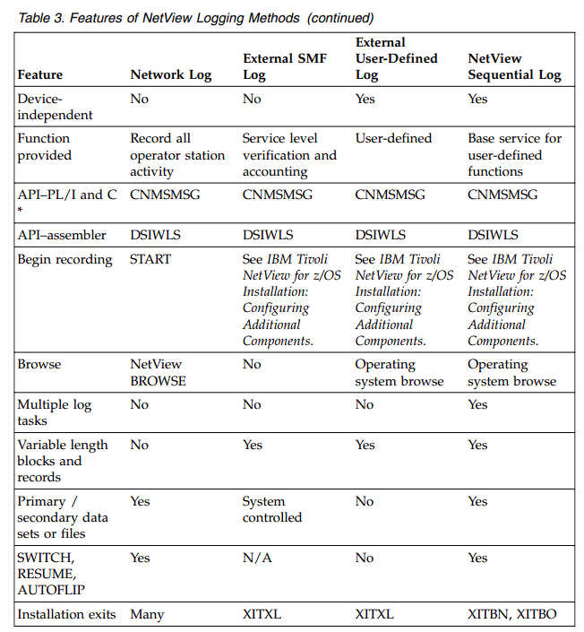
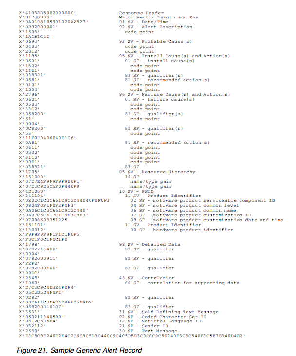

Chapter 1. Designing Functions
With the NetView program, you can manage complex, multivendor networks and
systems from a single point. This chapter describes what you must know before
making an addition or change to the NetView program, and shows some of the
facilities that you can use to customize tasks.
Customization Areas
Customizing the NetView program takes place at various stages of network and
system implementation. These topics are described in several NetView books. See
Table 1 on page 3 for the NetView books that contain more information on the
listed topics.
Alias names are used to communicate across networks. You can use alias names to
resolve conflicts when duplicate resource names exist in multiple networks. With
alias names, the name of the resource, such as a logical unit (LU), a class of
service, a source LU (SRCLU), or a LOGON mode table from the sending network,
is translated to a name that is unique to the receiving network. See IBM Tivoli
NetView for z/OS Installation: Getting Started for more information about how to
define alias names.
Filtering controls the amount of data presented to operators. Filtering also controls
the amount of data recorded in the network log. The NetView automation table
allows you to control the types of messages that each of your network operators
receives, and the amount of data recorded to message logs. See the IBM Tivoli
NetView for z/OS Automation Guide for descriptions of automation statements and
descriptions of how to use automation statements to suppress (filter) messages.
You can also filter event data that network resources send to the hardware monitor. Recording filters control the information that is recorded in the hardware monitor's
database. Viewing filters determine the records that appear on each network
operator's terminal. You can find more information about hardware monitor
filtering by referring to the IBM Tivoli NetView for z/OS User's Guide: NetView or the
IBM Tivoli NetView for z/OS Automation Guide for a description of how to use
automation statements to set recording filters for specific events. You can also see
the NetView online help for the SRF and SVF commands.
Focal point support enables the NetView program to be defined as either a focal
point node or a distributed entry point node. A focal point is a central network
node that receives information from distributed entry point network nodes. The
information forwarded from the entry points to the focal point can be messages,
alerts, or MSUs. For more information on NetView focal point support, see the
IBM Tivoli NetView for z/OS Automation Guide.
You can use automation to implement automatic responses to events that occur in
your network. See the IBM Tivoli NetView for z/OS Automation Guide for more
information about defining NetView automation statements to improve the
productivity of your system operators and your network operators. For additional
information the NetView program's automation, see the IBM Tivoli NetView for z/OS
Automation Guide.IBM Tivoli NetView for z/OS
Automation Guide.
Use Generic alerts and code points to obtain problem determination support for
devices and applications in your network that the NetView program does not
automatically support. Chapter 6, “Customizing Hardware Monitor Displayed
Data,” on page 77 contains information on how to use the code point tables that
are provided with the NetView program and the user-defined code point tables to
build hardware monitor Alerts-Dynamic, Alerts-Static, Alerts-History, Event Detail,
and Most Recent Events panels.
National Language Support allows your operators to interact with the NetView
program in a language other than English. See IBM Tivoli NetView for z/OS
Installation: Configuring Additional Components for a description of how to write
your own message translations in any other supported language. The Japanese
National Language version provides a Japanese version of NetView panels and
messages.
You might need to consider operator control and security. To control who can gain
access to the NetView program and what effect an operator can have on your
network, you should consider some level of logon verification, command
authorization, and span of control. See the IBM Tivoli NetView for z/OS Security
Reference for a complete description of how to implement the different levels of
security verification available in the NetView program, how to limit the commands
an operator can issue (command authorization), and which part of the network's
resources an operator can control (span of control).
You can modify the color and format of the NetView command facility panel. See
Chapter 2, “Customizing the NetView Command Facility Panel,” on page 27 for
more information.
You can create or change panels for your online help, online message help,
NetView help desk, the hardware monitor, and any user-written, full-screen
applications. For a detailed explanation of how to create new panels or modify the
panels that are supplied with the NetView program for these components, see
Chapter 4, “Modifying and Creating Online Help Information,” on page 65 or
Chapter 6, “Customizing Hardware Monitor Displayed Data,” on page 77.
Withsequential loggingg (sequential access method log support), you can write
variable length records to multiple user-defined logs. You can browse or print
these logs using your operating system facilities. For more information about
defining sequential log tasks, see theIBM Tivoli NetView for z/OS Installation:
Configuring Additional Components, IBM Tivoli NetView for z/OS Programming:
Assembler, or IBM Tivoli NetView for z/OS Programming: PL/I and C.
Session monitor datacan be collected and kept in the session monitor database. To
control how much session data is collected and kept, customize several session
monitor definition statements. See theIBM Tivoli NetView for z/OS Installation:
Configuring Additional Componentsfor more information. Defining performance
classes for the response time monitor (RTM) feature is also described in IBM Tivoli
NetView for z/OS Installation: Configuring Additional Components.Objectives and
boundaries are set for each performance class, and a performance class is then
chosen for a session.
User-written functions add new function to the NetView program or modify
existing ones. You might want to develop your own command lists and
user-written code. See the IBM Tivoli NetView for z/OS Programming: REXX and the
NetView Command List Language for an overview of writing command lists in REXX
or in NetView command list language to help you control your network and make the operators' jobs easier. You can find information about writing code such as
command procedures and installation exits in IBM Tivoli NetView for z/OS
Programming: PL/I and C. Information on writing command processors, installation
exit routines, and user subtasks in assembler language can be found in IBM Tivoli
NetView for z/OS Programming: Assembler.
The NetView Resource Object Data Manager (RODM) is a data cache that stores
network configuration and status information about system resources. With
RODM, you can automate network management functions associated with the
resources defined to RODM. In addition, you can write RODM applications to
perform other network management and automation tasks. See the IBM Tivoli
NetView for z/OS Resource Object Data Manager and GMFHS Programmer's Guide for
more information.
Functions to Consider before Making Modifications
To customize NetView functions, you can write your own command procedures or
modify one of the existing command procedures supplied by the NetView
program. Ways to modify existing functions include:
. Filtering or modifying the system management facility (SMF) records written by
the NetView program
. Providing a policy that routes operator messages
. Reformatting, analyzing, or editing operator messages
. Checking command authority
Additional functions you might want to add involve managing additional
components in your network, such as X.25 data network components or voice
network components. You can develop new applications and integrate them with
existing management functions to meet your requirements. Examples of these
user-defined functions include:
. Real-time monitoring of specific resources, applications, or components in your
network
. Collecting and recording additional SMF data for trend analysis or other data
reduction applications you need
. Providing additional response time problem detection and alerting
. Detecting different classes of line problems
Finding Customization Information
Table 1 lists customization topics and provides the name of the documentation that
includes information about that topic.
For information about customizing AON,see theIBM Tivoli NetView for z/OS User's
Guide: Automated Operations Network.
For information about customizing the NetView management console, see the IBM
Tivoli NetView for z/OS Programming: REXX and the NetView Command List Language.
For information about customizing the Tivoli NetView for z/OS Enterprise
Management Agent, see thee IBM Tivoli NetView for z/OS User's Guide: NetView
Enterprise Management Agent.
Collecting Data
Typical sources for collecting data useful in customization procedures are:
. Installation exit interfaces provided in the NetView program
. System or NetView services that provide status, configuration, processing, or
authorization information
. Data files and network devices that are accessed using system or NetView
services
. Messages to operators indicating that important events are occurring in a system
or an application.
Installation Exits
Some NetView installation exits allow access to network management data.
Through these installation exits and user-written functions you can obtain the text
of operator commands, messages, and logons. Data that the NetView program
writes to VSAM files and to the SMF log, as well as data on the VTAM
communication network management (CNM) interface, can be accessed within
other NetView installation exits.
Reference:For more information about NetView installation exits, see theIBM
Tivoli NetView for z/OS Automation Guide, IBM Tivoli NetView for z/OS Programming:
Assembler, and IBM Tivoli NetView for z/OS Programming: PL/I and C.
Service Routines
System or NetView services give you access to information such as:
. System date and time
. Addresses of programs
. Addresses of named storage areas
. Valid NetView operators
. Operator span of control
. Values of command list variables
Reference:see theIBM Tivoli NetView for z/OS Programming: Assemblerfor
information about macros such as DSIDATIM, DSICES, DSIFIND, DSIQOS,
DSIQRS, and DSIKVS. See theIBM Tivoli NetView for z/OS Programming: PL/I and Cfor information on service routines such as CNMINFC, CNMNAMS, CNMSCOP, and CNMVAR
Data Files
The NetView program provides specialized disk services and VSAM data services
to access network management data files. In addition to these, functions written in
a high-level language (HLL), such as PL/I and C, can invoke system allocation and
access methods to read from NetView partitioned data sets and request VSAM
I/O. CNM interface services also provide access to data coming from devices in
the network.
Using the NetView PIPE command, you can read data files using the QSAM and
(From Disk) stages. Through the pipe facility, you also have access to VSAM data
using DSIVSAM and DSIVSMX. See the IBM Tivoli NetView for z/OS Programming:
Pipes for information about DSIVSAM and DSIVSMX.
REXX command lists can make use of the EXECIO command to read from and
write to sequential data sets or partitioned data set members.
Reference:see the IBM Tivoli NetView for z/OS Programming: PL/I and Cfor
information about VSAM and CNM interface services.
For more information about pipes, see theIBM Tivoli NetView for z/OS
Programming: Pipes
see theIBM Tivoli NetView for z/OS Programming: REXX and the NetView Command
List Languagefor information on REXX file input and output. See the IBM Tivoli
NetView for z/OS Programming: Assemblerfor information on using DSIDKS for read
access to NetView data sets or files, DSIZVSMS for VSAM I/O, and DSIZCSMS for
CNM data services.
Operator Commands and Messages
You can issue operator commands within command procedures to request status
data. The resulting response messages containing the requested status data can be
trapped and processed in the command procedure. You can also process data in
other system and network messages in user-written command procedures that are
invoked through NetView automation.
Reference:see the e IBM Tivoli NetView for z/OS Programming: REXX and the
NetView Command List Languagefor information on REXX and NetView command
list language message processing. See theIBM Tivoli NetView for z/OS Programming
PL/I and CC for information on PL/I and C message processing. For more
information on writing automation options, see theIBM Tivoli NetView for z/OS
Automation Guide.
Data Storage and Recording
You can use NetView command procedures to store and retrieve data needed for
many user-written functions. Command procedures written in REXX, NetView
command list language, PL/I, or C can create, set, and read global and task
variables.
For permanent storage and for larger volumes of data, you can record certain
information in data files rather than naming it and storing it as a command list
variable. The NetView program allows you to record this data in a log. For
example, you can log activities of your applications along with system or network
activities that the NetView program is logging. You might want to produce a
separate log of data that you collect.
References:see the IBM Tivoli NetView for z/OS Installation: Configuring Additional
Componentsand “Choosing a Language” on page 14 in this book for information
on sequential logging.
Operator Presentation
You can customize or extend some of the NetView program's operator presentation
functions with the VIEW command or by modifying panels that some components
of the NetView system use to present data to operators. See Chapter 3, “Using the
VIEW Command,” on page 31 and Chapter 4, “Modifying and Creating Online
Help Information,” on page 65 for more information.
You can also use messages to present information to operators. With messages, the
data from user-written functions becomes subject to NetView automation
processing, allowing both automatic and manual operation of your functions.
references:see theIBM Tivoli NetView for z/OS Programming: Assembler for
information about DSIWCS, DSIMBS, DSIMQS, DSIPSS, and other message
services. see the IBM Tivoli NetView for z/OS Programming: PL/I and Cfor
information about using CNMSMSG. See theIBM Tivoli NetView for z/OS
Programming: REXX and the NetView Command List Languagefor descriptions of
REXX and NetView command list language write-to-operator (WTO) messages and
other message services.
You can also customize the NetView command facility panel. See Chapter 2,
“Customizing the NetView Command Facility Panel,” on page 27 for more
information.
Tasks
To write functional extensions to the NetView program, keep in mind that the
NetView design is based on z/OS.
References:The z/OS library is a good reference for explanations of how words
such as dispatch, task, and the names of various system services are used in this
section.
NetView Program as a System Application Program
The NetView program is organized into several parallel tasks, each one capable of
being dispatched separately in a multitasking environment. When any one task is
idle, any of the others is eligible to run. A system multitasking dispatcher uses the
NetView program's ATTACH system service to create each new task. When a task
has no more processing to do and is ready to become idle, the task calls the WAIT
system service. The POST system service takes a task out of an idle state, and
allows it to be dispatched when new input data is ready to be processed for that
task.
NetView Program Tasks
When the NetView program starts, its main task attaches several subtasks of
different types, depending on the function to be performed. Each different task
type determines the specific system interfaces and operator interfaces that are
available under that task, and the type of transactions you can perform.
Each operator station task (OST) supports one NetView operator identified by a
unique name. The operator identifiers (OPIDs) are defined in the NetView
parameter library. OPIDs are assigned to an OST when an automated operator, known as an autotask, is activated using the AUTOTASK command, or when an
operator logs on using a VTAM-connected terminal.
Each NetView-NetView task (NNT) also supports an operator. This type of task is
used when the operator logs on to the NetView program from another NetView
program rather than from a terminal. The other NetView program can be running
in a different machine but must be connected through VTAM. The operator logs on
from the other NetView program using the START DOMAIN command.
Each hardcopy task (HCT) supports a 3287 printer connected through VTAM to
provide a hardcopy log for operators. See Figure 1 on page 9 for a structural
overview of the command facility and its task structure.
There is only one primary program operator interface task (PPT) for each NetView
program. When VTAM is running, the PPT opens a special VTAM application
control block (ACB) for the VTAM programmable operator interface (POI) to
receive unsolicited data from VTAM.
Note:When the term VTAM is used in this book, it means the VTAM component
of the z/OS Communications Server.
Each optional task (OPT) must be defined by a TASK statement in the NetView
parameter library. The program module that runs for an OPT can be any program
that meets the specification for optional tasks described in “Adding Optional Tasks
to the NetView Program” on page 14.
Each data services task (DST) is a specific case of an optional task. See “Adding
Optional Tasks to the NetView Program” on page 14. The TASK statement for a
DST can name an initialization member in the NetView parameter library from
which statements are read to define parameters for the functions performed by the
specified DST.
Program Activity within a Task
After being activated, each type of NetView task waits for a request to perform a
specific unit of work. When that unit of work is complete, the task enters a normalwait state. The task runs again when another request to perform a unit of work is
received. Each task uses a list of event control blocks (ECBs) when it issues its
WAIT. The NetView customization macros and services are provided to ensure that
any implied waiting is done through the ECB list of the task so that all of the
task-request interfaces within the NetView program remain enabled.
Every NetView task has its own termination ECB and its own message queue ECB.
Some types of tasks (for example, OSTs or DSTs) can have additional ECBs in their
ECB lists. The additional ECBs represent processing that the task tests for and
performs when it is posted out of its WAIT state.
Queuing Work to NetView Program Tasks
While a task is in its normal WAIT state, another task in the NetView program can
run. A NetView task that is running can be interrupted at any time by an event in
the system, and can be preempted by a higher-priority task until that task issues
its normal WAIT. System functions outside of the NetView program can also
interrupt the NetView processing by running scheduled interrupt exit routines that
are associated with specific NetView tasks.
Data for a task can be placed in its message queue or another work queue, and the
task can be posted to perform that work at any time. The data can originate in
another NetView task. This can happen when a DST queues message data to an
OST to be displayed to an operator. The data can come into the NetView program
through an interrupt exit routine that is scheduled by an event such as the
completion of a VTAM RECEIVE request.
Message and Command Buffers
The data placed in the various task queues is formatted into a special data
structure called a message buffer or a command buffer. A header at the beginning
of the buffer indicates the type of data the buffer contains and any special formats
by which the data must be accessed. Commands are processed by programs called
command processors that you provide in your customization programming for the
NetView program. Messages are processed either according to predefinitions built
into the NetView task, or by NetView automation command processors. Message
buffers are also available for automation at various points in NetView processing
through installation exits.
Immediate Commands
An immediate command starts processing as soon as an operator enters the
command. The requested function is performed immediately, even if the task is in
the middle of a large queue of work.
An immediate command runs under the OST and NNT subtask environments.
Unlike other commands, immediate commands can receive control with the
TVBINXIT bit set on. Immediate commands interrupt mainline processing and
cannot be interrupted by another command. Immediate commands can be
interrupted by other exits in asynchronous activity.
Long-Running Commands
A long-running command is a command that can suspend processing to allow
other activity, such as operator commands and data retrieval, and then resume
processing. All the NetView components are long-running commands. NetView command list language, REXX, PL/I, and C command procedures are also
long-running commands. The DSIPUSH macro allows an assembler command to
run as a long-running command.
Long-running commands run under an OST, NNT, PPT, or DST (logoff routines
only). Long-running commands can be:
. Invoked directly by operator input . Called by a command list . Called by another long-running command.
Long-running commands return control to the NetView program after scheduling
work but before processing is complete. The NetView program then processes
other work that is pending.
You can use long-running command processors to retrieve data from another task
or from another domain without allowing the calling function or calling command
list to proceed during the retrieval. When the retrieval is executing, the processor's
task can continue to receive messages and accept commands.
Data Services Commands
A data services command processor (DSCP) runs under the DST subtask
environment. DSCPs perform CNM data services and VSAM data services. DSCPs
can also be called for centralized or serialized user-defined functions that do not
use CNM interface or VSAM services.
Defining User-Written Programs on the Host: Exits and Commands
You can provide two types of user-written programs within the NetView task
environments:
. Installation exits
. Command processors.
References:The programming interface details are provided inIBM Tivoli NetView
for z/OS Programming: PL/I and C and IBM Tivoli NetView for z/OS Programming:
Assembler.In designing user-written functions, you can use the installation exit
interface and the command processor interface in the NetView program to fit your
own programming into the overall structure of the NetView program.
Installation Exit Programs
Installation exits are provided in the NetView program at several points in the
processing of logon and logoff data, command buffers, and message buffers.
Different exits are driven based on the origin of the buffer and the stage of the
NetView processing that the exit is in. Special exits are driven under DSTs to
handle the data for a task during initialization, input, and output.
References:For a summary of the NetView installation exits, see the IBM Tivoli
NetView for z/OS Automation Guide, IBM Tivoli NetView for z/OS Programming:
Assembler, and IBM Tivoli NetView for z/OS Programming: PL/I and C. br>
General installation exits are identified and invoked with preassigned module
names of DSIEXnn, and the DST exits are uniquely identified in the task DSTINIT
initialization statements.
DSIEX21 is used to access the DSITCPRF member. For more information, see theIBM Tivoli NetView for z/OS Security Reference.
Command Processors and Command Lists
NetView command processors and command lists can be started by:
. An operator request
. A command buffer queued to a task for processing by any NetView program
. A command call from another command processor
. An action specified in the NetView automation table
References:To define command lists written in the NetView command list
language or REXX to the NetView program, place them in the NetView command
list libraryi (ddname DSICLD)see theIBM Tivoli NetView for z/OS Programming:
REXX and the NetView Command List Languageto find out how to create command
lists for specific operating systems.
You must link-edit PL/I, C, and assembler command processors into the NetView
load library (ddname STEPLIB), and define them to the NetView program. To define
command processors written in PL/I, C, or assembler to the NetView program, use
a CMDDEF statement in the CNMCMD member of DSIPARM. Command
processors are link-edited into the NetView load library.
You can implement parts of a function in multiple installation exit programs and
command processors. A common way of splitting a function across command
processors is to divide processing between OSTs and DSTs. Because OSTs receive
data from operator stations and return data back to them, a command processor is
written to:
. Be called when the command is entered by an operator
. Parse the command data and form a data services request
. Queue a command buffer containing the data services command to be processed
by the DST
. Return an error message or a command confirmation message to the operator
The DST completes the function in a separate command processor that is called
because of the command buffer that is built and queued by the first command
processor. Under the DST, functions requiring the special data services of VSAM,
external logging, or the VTAM CNM interface are performed and messages can be
returned to the operator task that queued the command. Figure 2 on page 13
shows a typical program design for a function that uses the CNM interface and
VSAM services.

With long running commands, you can separate a complex function into a
sequence of separate transactions. Command processors can establish a named
stack entry where an anchor address is saved. A related command processor can
later retrieve this address and perform another phase of the same processing.
When naming your commands, observe the following guidelines:
. Start with a letter (alphabetic)
. Avoid special characters such as commas and colons
. Avoid NetView command names, both internal commands and those shipped in
CNMCMD. NetView internal command names are CSCFDST, HMSTATS,
LOGNMVT, LOGRU, MESSAGE, PIPE, and VIEW.
. Avoid the following NetView prefixes:
– AAU
– BNH
– BNI
– BNJ
– BNK
– BNT
– CNM
– DSI
– DUI
– DWO
– EGV
– EKG
– EUY
– EXQ
– EYV
– EZL
– FKB
– FKV
– FKW
– FKX
– FLB
– FLC
– FMG
– FNA
– IHS
Note:Messages that are issued by different means in a command processor or
command list might not be displayed at its destination in the same order in whichthey are requested by the command processor or command list. For example,
assume that a command list gets control via the designator character (DSIG) and
runs on a CONSOLE=*ANY* autotask. If the command list then issues a PIPEPIPE
command with the CONSOLE stage followed by a WTO command, the message
issued by the WTO command might be displayed on the operator console before
the message issued by the PIPE command with CONSOLE.
Adding Optional Tasks to the NetView Program
You can write a completely new subtask in assembler language that the NetView
program starts as an optional task (OPT) or subtask.
For an OPT, you must supply code for the subtask's initialization, installation exit,
message, and command processing functions and termination. Because some of
these elements are already provided in an existing DST, using the DST as a starting
point is more practical.
Reference:For more information on OPTs and DSTs in assembler language, see
the IBM Tivoli NetView for z/OS Programming: Assembler.
Choosing a Language
One application program interface might be more suitable than another for your
particular customization requirements. Consider the effects on performance, ease of
creation, and maintenance when determining the interface to use. This section
describes the languages available and lists reasons that you might choose one
language over another.
Input and Output
REXX, PL/I, C, and assembler all offer functions for reading from and writing to
direct access storage devices (DASD). The NetView program provides specialized
disk services and VSAM data services to access network management data files. In
addition, functions written in PL/I or C can invoke system allocation and access
methods to read and write data. CNM interface services also provide access to data
coming from devices in the network.
Reference:see the IBM Tivoli NetView for z/OS Programming: PL/I and Cfor
information about VSAM and CNM interface services. See theIBM Tivoli NetView
for z/OS Programming: Assembler for information about using DSIDKS for read
access to NetView data sets or files, DSIZVSMS for VSAM I/O, and DSIZCSMS for
CNM data services.
see theIBM Tivoli NetView for z/OS Programming: REXX and the NetView Command
List Language for information on REXX file input and output.
Performance
Write performance-critical applications in a compiled or assembled language.
Generally, compiled or assembled command procedures execute faster than
interpretive (REXX and NetView command list language) command lists.
You must write NetView-driven installation exit routines in assembler, PL/I, or C.
Any command processor that accesses NetView control blocks must be written in
assembler. Command procedures that can be driven by terminal input or by
messages and that do not need to access NetView control blocks can usually be
written in REXX or in NetView command list language. Generally, command lists written in REXX perform somewhat better than those written in NetView
command list language. See “REXX Versus the NetView Command List Language.”
Additionally, the performance of REXX command lists can be improved by
compiling the REXX command list.
Preloading a REXX or NetView command list (see the NetView online help for the
LOADCL command) improves overall performance of the command list.
Reference:For details about compiling REXX command lists, see theIBM Tivoli
NetView for z/OS Tuning Guide.
For additional performance recommendations, see the IBM Tivoli NetView for z/OS
Installation: Configuring Additional Components and IBM Tivoli NetView for z/OS
Installation: Configuring Additional Components.
Stability
If you anticipate changes to your procedures as you gain more experience or as
your operating environment changes, you might want to use command lists to
implement the procedures initially. Changes are easier to make in command lists
because you can incorporate the changes and test them online without having to
restart the NetView program. You can translate procedures into a compiled
language when you become confident of their stability.
Testing
Testing capabilities for command lists include the ability to trace execution using
either operator commands or command list statements. A remote interactive
debugger (RID) that displays information to a NetView operator console can help
you in debugging PL/I and C user-written command processors and installation
exits. The NetView program does not provide any specific functions to help debug
assembler programs.
Speed Of Implementation
Because command lists are easy to write, test, and put into production, they can be
an appropriate choice in addressing immediate operational needs.
REXX Versus the NetView Command List LanguageIf all of your systems can run REXX, choose REXX over the NetView command list
language for writing command lists. REXX is a structured language that enables
the use of subroutines. REXX is the easier language to learn and provides
additional functions, such as mathematical capabilities and improved string
handling. REXX can read from and write to data sets with EXECIO. In addition,
the performance of REXX command lists can be improved by compiling the REXX
command list.
REXX language skills can be used in environments other than the NetView
program. However, REXX procedures written for the NetView program probably
will not be transportable to other environments because of their function content.
In multiple environments, REXX is more useful because you can transfer REXX
programming skills to solve NetView problems without learning another language.
If your installation uses several operating systems, it is possible that some of them
support REXX and others do not. In this case, you can create bilingual command
lists that contain both REXX and NetView command list versions of your instructions. The command lists run in REXX if REXX is available; otherwise, they
process in the NetView command list language.
Reference:For details about compiling REXX command lists, see theIBM Tivoli
NetView for z/OS Programming: REXX and the NetView Command List Language.
see the IBM Tivoli NetView for z/OS Programming: REXX and the NetView Command
List Languagefor more information about bilingual command lists.
Language Choices by Function
Table 2 lists additional capabilities to consider when choosing which language to
use.
Reference:See your specific programming language guides for considerations on
writing in mixed languages.
Logging
The NetView program provides several ways to log information. Table 3 lists the
available features of the common logging methods.

Reference:For information about the network log, see theIBM Tivoli NetView for
z/OS Automation Guide.For information about external logging using the system
management facility (SMF), a user-defined log, or sequential logging, see theIBM
Tivoli NetView for z/OS Installation: Configuring Additional Components.
Cross-Reference for Message and Environment Functions
Table 4 on page 18, Table 5 on page 19, and Table 6 on page 20 provide a
cross-reference for the NetView system data, task data, and message functions.
With these matrixes, you can determine whether the function you are interested in
is available to the automation table, REXX, NetView command list language, or
assembler. You can also determine what the name of the function is. Each matrix is
alphabetized by the name of the REXX function.
Note:
1. If you are writing assembler-language command processors, see thee IBM Tivoli
NetView for z/OS Programming: Assemblerfor the BUFHDR mapping within the
DSITIB mapping macro, the DSIIFR mapping macro, and the DSIAIFRO
mapping macro for exact field definitions.
2. If you are writing command lists, see the IBM Tivoli NetView for z/OS
Programming: REXX and the NetView Command List Language for more
information about NetView command list language control variables and REXX
functions.
3. If you are writing in PL/I or C language, see the IBM Tivoli NetView for z/OS
Programming: PL/I and C for more information about the CNMINFC, CNMINFI,
and CNMGETA service routines.
4. If you are writing automation table statements, see the IBM Tivoli NetView for
z/OS Automation Guide for a description of the automation table condition items.
Customizing PF Keys and Immediate Message Line
You can set global variables that can be searched for and placed on the PF key line
on panels displayed by BROWSE, STATMON, and VIEW commands. On VIEW
panels, the immediate message line is also used as the PF key line. The variable
names are prefixed by (&)CNMIM and followed by the application name. Valid
variables include CNMIMLBROWSE, CNMIMMBROWSE, CNMIMSTATMON,
CNMIMVIEW, and CNMIMWINDOW.
For View panels, if the VIEW application has not provided a value for CNMIMDL,
VIEW searches the global dictionaries (task, then common) for a variable named
CNMIMxxx, where xxx is the application name provided when VIEW was
invoked. If the CNMIMxxx variable is not found, VIEW searches for CNMIMVIEW
in the same dictionaries. This is similar to the way keys are set for VIEW
applications. Finally, if none of these variables is present, the text from message
BNH257I is used.
Modifying CNMKEYS
The PFKDEF command list (CNME1010) can assign one or more task global
variables from the target file to match the key settings for applicable NetView
applications. Figure 3 shows how you can set the PF keys for the Browse, Status
Monitor, and View panels.
Chapter 2. Customizing the NetView Command Facility Panel
The NetView command facility panel can be customized. You can customize:
. The colors of fields on the panel . The information that precedes the message text
. The default colors for held, action, normal, and immediate classes of messages
. The color of the command area
. How much of the panel area is set aside for held and action messages
Using a Screen Format Definition
You can use a screen format (SCRNFMT) definition to specify attributes for the
command facility panel and a default value for the color of messages. To activate
the screen format definition, use the NetView DEFAULTS and OVERRIDE
commands. Refer to NetView online help for details on how to use DEFAULTS and
OVERRIDE. A short description of each option that can be specified in a screen
format definition is listed under “Screen Format Definition Statements.”
Reference:For detailed descriptions of the screen format definition statements,
refer toIBM Tivoli NetView for z/OS Administration Reference. CNMSCNFT is a
sample screen format definition, provided inIBM Tivoli NetView for z/OS
Installation: Configuring Additional Components.
Note:
1. Color and highlighting must be supported by your hardware and emulator. In
addition, you must log on to the NetView system with a query-type logmode.
2. When you replace an active screen format definition with a new screen format
definition, all definition statements are replaced. Any definition statement that
is not specified in the new screen format definition uses the value that is
supplied with the NetView program. The values that are supplied with the
NetView program for each definition statement are listed in IBM Tivoli NetView
for z/OS Administration Reference.
For example, a screen format definition has been activated with the DEFAULTS
command. Subsequently, operators activate customized screen format
definitions using the OVERRIDE command. The statements that were not
specified in an operator's screen format definition use the value that is supplied
with the NetView program rather than the value from the screen format
definition that was activated with the DEFAULTS command.
Screen Format Definition Statements
The following screen shows the fields that you can customize on the NetView
message panel.
NetView Message Panel
The following formats can be customized:
▌1▐ Title area
Use the TITLE statement in a SCRNFMT definition to customize the color
of the word NETVIEW on the screen.
▌2▐ Domain identifier
Use the TITLEDOMID statement in a SCRNFMT definition to customize
the color of the NetView domain name.
▌3▐ Operator identifier
Use the TITLEOPID statement in a SCRNFMT definition to customize the
color of the operator name.
▌4▐ Current date
Use the TITLEDATE statement in a SCRNFMT definition to customize the
color of the date. You can also customize the format of the date using the
DEFAULTS and OVERRIDE commands.
,▌5▐ Time data was last displayed
Use the TITLETIME statement in a SCRNFMT definition to customize the
color of the time. You can also customize the format of the time using the
DEFAULTS and OVERRIDE commands.
▌6▐ and ▌7▐ System states
Use the TITLESTAT statement in a SCRNFMT definition to customize the
color of the status characters in the upper right corner of the panel.
▌8▐ COLUMNHEAD line
Use the COLUMNHEAD statement in a SCRNFMT definition to create a
line at the top of the screen with labels for prefixes. This line can have up
to 16 tags (C1...C16) in any order. Total length of tags, including one space
between each tag, cannot exceed 78 characters. Set the tags using the
SCRNFMT definition. The PREFIX and NOPREFIX statements control
which tags appear. You can also choose not to have the line appear on the
screen.
▌9▐ Output area
Use the HELD, ACTION, NORMAL, and NORMQMAX statements of the
SCRNFMT definition.
Note: HELD, ACTION and NORMAL statements set default colors for
messages. If message color has been previously set, the default message
color will not take effect. See “Message Color and Highlighting” on page
30 for more information.
The NORMQMAX statement specifies how many normal messages are
queued for later display (excluding held and action messages). An example
of this is the number of messages kept while you are working in another
panel, or while the panel is locked.
When the NORMQMAX is exceeded, the NetView program automates and
logs (if required) incoming messages and then discards them, without
interrupting the operator. The oldest messages are discarded until the
number of queued messages is half the NORMQMAX value.
When the operator returns to the command facility (or the panel is
unlocked), message DSI593A indicates how many messages were
discarded.
The value of NORMQMAX can range from 0 to 2147483647; the default is
3000. The minimum value allowed is 100 messages, so if you specify less
than 100, it is rounded to 100. Specifying a NORMQMAX value of 0 means
an infinite queue, and is basically the same as specifying the maximum
value of 2147483647.
Attention: Setting the value of NORMQMAX too high might cause out of
storage conditions. Conversely, setting the value too low can prevent your
operators from seeing all of their messages even when message traffic rates
are low.
The NORMQMAX value also applies to hardcopy printers and to
OST-NNT cross-domain sessions. Hardcopy printers can get backlogged
because they are slow or because they run out of paper. An OST-NNT
session can get backlogged because the message traffic over the session
exceeds the send rate for that session.
▌10▐ Area for held and action messages
Use the HOLDPCNT statement in the SCRNFMT definition. The NetView
program uses 10 lines of the screen for the title line, immediate message
area, command area, and a warning held-message: DSI151I. Held messages
are not displayed in these 10 lines. You can use HOLDPCNT to specify
what percentage of the remaining lines you want to use for held messages.
For example, on a 24-line screen, setting HOLDPCNT to 100% will give
you 14 lines for held messages.
Specifying HOLDPCNT as 0 means that held messages are not displayed
on the screen. If HOLDPCNT is non-zero, the minimum number of lines
used for held messages is two.
You can use HOLDWARN to get a warning message that held messages
exist, even though they are not displayed on the screen.
Note: The NetView program will not display the control line of a held
message without the data line of the message. This helps prevent operators
from accidentally erasing a held message without seeing the text.
▌11▐ Indentation
Use the INDENT and MLINDENT statements in the SCRNFMT definition.
Separator line
The LASTLINE statement of the SCRNFMT definitions changes the color of
the dashed separator line between the new and old messages of the screen.
▌12▐ Command entry indicator
Use the CMDLINE statement of the SCRNFMT definition
Lock/unlock indicator (***)
Use the LOCKIND statement in the SCRNFMT definition.
▌13▐ Immediate message area
Use the IMDAREA statement in the SCRNFMT definition.
▌14▐ Command area
Use the CMDLINE statement in the SCRNFMT definition to change the
color used for the command input area. You can change the size of the
command area with the INPUT command.
Message Color and Highlighting
Four color and highlighting attributes can be set for messages:
. Foreground color
. Background color
. Intensity
. Highlighting
Note:Background color is not supported on most 3270 devices and emulators. In
this case, black is used for the background color.
The color and highlighting attributes for messages can be set in several places:
. In the automation table
. For MVS system messages, in the MVS MPF table
. In installation exits
. In a screen format definition
Of all of the options listed, the screen format definition takes the lowest
precedence. The following rules of precedence apply:
. MPF table color intensity and highlighting for MVS system messages override
the screen format definition for these attributes.
. Automation table specifications of color intensity and highlighting override the
following:
– The MPF table specified color intensity and highlighting
– Screen format definition of color intensity and highlighting
– DSIEX02A and DSIEX17 specification of color intensity and highlighting
(these exits are driven prior to automation).
. Installation exit specifications of color intensity and highlighting override the
MPF and the screen format definition for these attributes. In addition,
installation exit DSIEX16 (post-automation) can override the color intensity and
highlighting specified in the automation table.
Each of these presentation attributes can be manipulated independently. For
example, an MVS system message that had a match in the automation table with a
color action would be presented in the intensity and highlighting as specified in
the MPF table, but with the color as specified in the automation table.
Chapter 3. Using the VIEW Command
This chapter documents general-use programming interface and associated
guidance information.
The VIEW command processor can be used to display full-screen panels from
user-written programs. With the VIEW command, users can design their own
panels and control the color and highlighting of panel text.
The VIEW command enables command lists or command processors written in
PL/I or C to interact with an operator with full-screen panels. The data from the
command list or PL/I or C variables can be substituted into the panels.
Whether a field attribute is supplied by the value of an attribute variable or an
attribute character in a panel definition, it may apply to more than one line in a
display when the defined line is the last line of the panel definition, but not the
last actual row on the 3270 device (emulator).
When the value of a variable in a panel definition is longer than the remaining
space in a display line, the value will be truncated and not continue to the next
line of a display. Note: The space available in a display line is governed by 3270 device (emulator)
characteristics and the text indicator in a panel definition.
Creating Full-Screen Panels
To create panels for your operators, define the text and format in a data set or file.
The panel source consists of a prologue, followed by text and variables that define
the panel to be displayed. Figure 5 on page 32 is an example of the information in
the help source file. See “General Help Fields” on page 32 for descriptions of each
numbered field in the figure.
If your display consists of a sequence of lines or messages, you might find it easier
to use the WINDOW command for your full-screen panel. Use WINDOW to alter
its display and to define or redirect subcommands. For more information, refer to
the online help for WINDOW.
The NetView program provides a number of command lists that use the VIEW
command to display full-screen panels. Displaying a new panel by invoking VIEW
from a command list requires that you either modify an existing command list or
write a new one. When you modify a command list that is supplied by IBM, first
copy it into a user data set and change its name.
General Help Fields
The special characters in the source file, such as the dollar sign ($) and the percent
sign (%), are described in “Controlling Color and Highlighting of Fields” on page
38.
1 Prologue
An optional section for programmer comments. Each line of the prologue
begins with /* in columns 1 and 2. Only comments can be placed in this
section. If comments are displayed in the Help or Option Definitions
section, a return code of 83 is sent, and the panel is not displayed.
Comments that are displayed after these sections are treated as data.
2 Help
Optional definition of the panel. This field follows the prologue and is
coded in the following format:
Column
1 15
HELP=helppan commen
Note:You can also use HELP CMD=’command_text’. See the following
description for 3.
3 Option Definitions
An optional list of selections the operator can choose. This list can contain
panel names or commands. You can add an optional comment after the
panel name or command. At least one blank must separate the panel name
or command from the comment. The list cannot exceed 49 entries. The list
is coded in the following format:
Column
1 3
n panel_name or CMD='command_text' comment
Where n is the character the operator enters to call the panel or issue the
command.
To produce a continuation panel, n is blank, as follows:
Column
1 3
panel_name comment
In this case, panel_name identifies the continuation panel.
4 Text Indicator
Three required asterisks separate the prologue, help, and panel definitions
from the displayed panel text. These asterisks can be followed by the
following options, which can be in any order and must be separated by at
least one blank. v The AT1 option is attribute set 1 for color and highlighting attributes.
See Table 7 on page 34 and Table 11 on page 39 for more information.
. The AT2 option is attribute set 2 for color and highlighting attributes.
See Table 7 on page 34 and Table 11 on page 39 for more information.
. The SFD (screen-format default) option means that when the color or
highlighting for a field on a VIEW panel is either specified or else
defaults to X'00' (the default for 3270), then the color or highlighting
specified for the NCCF screen by the DEFAULTS SCRNFMT command
or OVERRIDE SCRNFMT command is used.
IF SFD is not specified, or
if no active SCRNFMT member is in effect, X'00' is sent to the device. If
the VIEW panel field is interpreted as the input command line, the color
and highlighting specified by the SCRNFMT CMDLINE is used; for any
other field, the SCRNFMT NORMAL specification is used. Sample
CNMSCNFT contains additional information.
. The XVAR option provides variables that can contain up to 31
characters, including periods.
Without this option, variables can contain only 11 characters and cannot
contain periods. See Table 7 on page 34 and “Compound Symbols” on
page 45 for more information on the XVAR option.
. The OPTROW=optchar option can be used to specify that any row (line)
that begins with the character defined by optchar is an optional row. The
maximum number of optional rows is defined as the number of rows
supported by the terminal, minus 24 (which can be zero). Optional rows
defined on the panel that go beyond this maximum are not displayed.
Also, rows (regular or optional) that go beyond the terminal's limit are
not displayed.
For an optional row, all the characters are shifted left one position to
compensate for the optchar, and the resulting last position (column 80) is
treated as a blank.See the WINDOW command list (CNME1505) and its View panel,
CNMKWIND, as an example of how to use OPTROW.
. The WIDE option enables the entire line width to be used on terminals
that support more than 80 columns. When WIDE is specified, panel
variables that are the last non-blank specifications on their respective
lines are substituted. The variables are not truncated until the end of the
line, which is defined by the terminal.
See the WINDOW command list (CNME1505) and its View panel,
CNMKWIND, as an example of how to use WIDE.

When three asterisks are followed by the AT2 option, attribute set 2 is used for
color and highlighting. For example:
. *** AT2 for English
. For attribute set 1,
use *** or *** AT1
For attribute set 1 and variables as long as 31 characters,
use *** AT1 XVAR for
English.
See “Controlling Color and Highlighting of Fields” on page 38 for more
information on attribute sets 1 and 2.
5 Name
The name of the panel.
6 Heading
The text that describes the use of the panel.
7 Panel Text
Up to 24 lines of text that constitute the displayed panel. See also the
OPTROW option described under Text Indicator.
Command list variables can be displayed anywhere in the panel text.See
“Displaying Variables in Source Panels” on page 43 for more information.
8 Message Area
The variable & CNMIMDL displays NetView error messages on line 23 of
the panel. If the application has not provided a value for CNMIMDL,
VIEW searches the global dictionaries (task, then common) for a variable
named CNMIMxxx, where xxx is the application name provided when
VIEW was invoked. If the variable is not found, VIEW searches for
CNMIMVIEW in the same dictionaries. Finally, if none of these variables is
present, the text from message BNH257I is displayed. The default English
text for BNH257I is “TO SEE YOUR KEY SETTINGS, ENTER ’DISPFK’”. The
text of message BNH257I can be changed in the message translation table.
See “Using PF Keys and Subcommands with VIEW” on page 57 for a list
of the subcommands that can be assigned to PF keys and “Customizing PF
Keys and Immediate Message Line” on page 25.
9 Command Line
NetView commands are typed on the command line. In a VIEW command with the NOINPUT option specified, a command line is defined by the
tilde (~) attribute symbol. The & CUR option identifies the cursor position
within the command line. Only one input field and only one & CUR option
is processed per panel. This option is useful for predefining a command in
the input field. Otherwise, the cursor defaults in the following order:
1. The last attribute variable that specified 'UY'
2. The first tilde field, if one is present
3. The first position in the upper-left corner
Coding the VIEW Command
code the VIEW Command Follow:

NOINPUT
Specifies that the VIEW command does not return any information to the
procedure that invoked it. NOINPUT is the default. If the panel defines a
command line, the NetView program treats input as a command. With the
NOINPUT option, there is no need for your command procedure to invoke the
UNIQUE command.
See Figure 5 on page 32 for the PF keys provided by the NetView program
when you specify NOINPUT.
INPUT
Specifies that input values and AID information can be returned to the
procedure calling the VIEW command. INPUT also specifies that cursor
location can be received from and returned to the procedure calling the VIEW
command. When you use the VIEW command with the INPUT option, use the
UNIQUE command to enforce uniqueness (only one occurrence of the
command on the roll stack). See “Using the UNIQUE Command” on page 48
for more information.
COMPAT
Specifies that the functionality for this invocation of VIEW is compatible with
the behavior of VIEW for releases of the NetView program prior to Version 5
Release 1. Refer to the documentation for the prior release in which the
program using VIEW had been written for details of the functionality. The
COMPAT option is the default.
EXTEND
Specifies that the extended functionality introduced in Tivoli NetView for z/OS
Version 5 Release 1 be used for this invocation of VIEW. Examples of this
functionality are:
. The ability to have VIEW pick up any local variable values that are specified
and use those values rather than any global variable values that have been
specified.
. The ability for VIEW to be interrupted with RC=2 when a message is
trapped.
The EXTEND option can be used to allow dynamic updating of variables
without the need to run separate programs (using global variables) to perform
the updating.
The EXTEND option is not supported for the NetView command list language.
Usage Notes®
. This table summarizes the difference between VIEW with the EXTEND option
and VIEW with the COMPAT option:
Note:All subsequent descriptions of VIEW in this book assume the extended
functionality introduced in Tivoli NetView for z/OS Version 5 Release 1.
However, in order to use this functionality, you must specify the EXTEND
option on the VIEW command.
. By specifying NOINPUT, you can use a command procedure to display online
help panels. See Chapter 4, “Modifying and Creating Online Help Information,”
on page 65, for more information on how to code help panel hierarchies.
. You can use the VIEW command to display data from messages obtained
through TRAP processing immediately upon receipt of the message. Updates are
also possible from non-message sources on a timed basis. For more information,
see “Dynamic Update Capabilities” on page 59.
. The VIEW command is intended to be used only from a command procedure. If
you use the VIEW command in command lists to display a panel, minimum processing should be done between exiting the view and the end of the
procedure. Operator input might be inhibited between the time the view is
ended and the end of the procedure.
. If a VIEW NOINPUT command is invoked with the same compname as a
previous VIEW command, then the previous VIEW command is canceled as well
as the command procedure that invoked that VIEW command.
Return Codes from VIEW and BROWSE
Table 9 lists and describes the return codes that can be received for the VIEW and
BROWSE command. The table also provides a brief description of the action you
must take
Return Codes from VIEW and BROWSE
The SHOWCODE command list is used by command procedures to display
descriptions of the nonzero return codes returned from the VIEW command.
Code the SHOWCODE command as follows:
Before issuing SHOWCODE from a command procedure, check to make sure that
the return code is not zero. See “Example of a REXX Command List to Update a
Panel” on page 60 for an example that uses SHOWCODE to display error
messages from VIEW.
Controlling Color and Highlighting of Fields
You can change or add to the color and highlighting of the existing panels. Text
color and highlighting in the displayed panel are controlled by attribute symbols
or variables. After you code attribute symbols in the source panel, they appear as
blanks in the displayed panel.
Scanning for attribute symbols or variables in a particular line occurs only if
column 1 contains an attribute symbol or panel variable. Otherwise, the line is
displayed as is, in the default color and without variable substitution.
Note: Color and highlighting depend on the terminal you are using.
Attribute Symbols
You can specify attribute symbols on the source panel to color or highlight text.
Edit the source panel and replace the blank space before the text with an attribute
symbol selected from the second column of Table 11 or Table 12.
Variables are parsed only at the first level. Nested VIEW variables are substituted
but not parsed. Therefore, color attribute symbols that are located in nested
variables are displayed as data.
An option specified in the header of a panel determines the set of attribute
definitions to use for that panel. If you specify no option (***), use the original set
(attribute set 1). Use attribute set 2 when you specify the option (*** AT2) on the
text indicator line of the panel definition. See “View-Based Help” on page 66 for
more information on the text indicator line.
Displaying Special Attributes
If you want to display a particular symbol that doubles as an attribute within a
colored or highlighted row, place a double quotation mark (") in front of the
symbol. For example, if you want the left brace ({) to appear in text, enter "{ in the
source panel. If you want to display a double quotation mark ("), enter "". When
you use a double quotation mark (") in the source panel, the text following the
double quotation mark is shifted to the left in the displayed panel. When the same
hexadecimal values for these symbols are coded as part of double-byte character
text surrounded with shift-out and shift-in control characters, they are not treated
as attributes.
Using the + Attribute
Be careful how you use the plus sign (+) for the color blue. If you want to assign
the color blue to a variable defined by the NetView command list language,
enclose the plus sign within a pair of single quotation marks as follows:
&COLOR = ’+’ To assign the color blue to the REXX variable A so that its contents, G, are
changed to blue, do the following:
A = ’+G’
Without the pair of single quotation marks, the NetView program interprets the
plus sign as a continuation character.
Using the $ and the @ Attributes
Because the $ character and the @ character are often used as data inside a
command list or REXX variable, VIEW treats them differently when defined in a
panel or in a variable. When in a panel, they are treated as attribute symbols as
described in Table 11 on page 39 and Table 12 on page 39. When in a variable, they
are treated as data. If the associated attributes are needed inside a variable,
substitute the greater than (>) and less than (<)
signs as synonyms for @ and $
respectively. Use the respective synonym in your command list. In the following
NetView command list example, the AMOUNT field displays the string $1,000 in
turquoise and the HEIGHT field displays the string @ 6 feet in green.
&AMOUNT = ’<$1,000’
&HEIGHT = ’>@ 6 feet’
This is what the same example would look like in REXX.
AMOUNT = ’<$1,000’
HEIGHT = ’>@ 6 feet’
When they are not used in a variable, the less-than and the greater-than symbols
are displayed as characters
Attribute Variables
Attribute variables are assigned in the command procedure that drives the view
panel. An alternative to defining attribute symbols on the panel or within the
variable data is to define attribute variables that are associated with panel
variables. Attribute variables describe attributes associated with panel variables
and their text following on the same line. Using an attribute variable provides a
wider range for attribute selection and allows you to define input fields. When you
use an attribute variable, the contents of the associated panel variable are not
scanned for attribute symbols.
An attribute variable name is formed by concatenating a dollar sign onto the front
of the panel variable name. For example, in NetView command list language, the
attribute for panel variable &V1 is defined in a variable called &$V1.
In REXX, PL/I, and C, the ampersand (&) is not used. For a PL/I or C program,
attribute variables must be set using CNMVARS in PL/I or Cnmvars in C.
The following is the syntax for the contents of an attribute variable:
►► attribute variable = ' tv tv tv... ' ►◄
where tv is the type value pair. Multiple pairs of the same type in one attribute
variable are allowed. The last pair is accepted and the previous pairs are ignored.
The values for type value are as follows:
tv =
type value
A =
Alarm
AN No audible alarm
AY Audible alarm (beep) when panel is presented
Note: The alarm specification applies only to the attribute variable for
the immediate message line ($CNMIMDL).
C =
Color
CB Blue
CD The default device color when a color value is not specified
CG Green
CP Pink
CR Red
CT Turquoise
CW White or neutral
CY Yellow
F =
Field
FA Protected; data cannot be entered on displayed panel; FA is the default
FI Unprotected; data can be entered on displayed panel
H =
Highlight
HB Flashing
HD The default extended highlighting when a highlighting value is not
specified
HR Reverse video
HU Underscored
I =
Intensity
ID Dark, nondisplayable
IH High intensity
IN Normal intensity; the default when an intensity value is not specified
U =
Cursor
UN The cursor is not placed at the beginning of this field; UN is the
default.
UY The cursor is placed at the beginning of this field. UY specifications for
multiple variables cause the last variable specified to be accepted and
the previous variables to be ignored.
Note:
1. If you do not want the cursor to be associated with a particular
variable, you can place the cursor in any row and column. Use the
VIEWICROW and VIEWICCOL variables in the procedure that calls
VIEW with the INPUT option. See “Full-Screen Input Capabilities”
on page 50 for more information on the VIEWICROW and
VIEWICCOL variables.
2. If you use the VIEWICROW and VIEWICCOL variables and also
specify UY on an attribute variable, the cursor is positioned by the
attribute variable.
3. If you do not use the VIEWICCOL and VIEWICROW variables or
specify a cursor for any attribute variable on a panel, the cursor is
placed at the beginning of the first input field.
Use one or more blanks to separate the type value pairs. The following is a NetView
command list language example where &V1 is defined as a protected field with
high intensity in red. &V2 is defined as a protected field in high intensity, in
turquoise, with the cursor placed in the field.
&$V1 = ’FA IH CR’
&$V2 = ’IN IH CT UY IH’
In the following REXX example, V1 is defined as an input variable (unprotected
field) with no cursor. For V2, all the defaults are used.
$V1 = ’FI UN’
$V2 = ’ ’
Attributes defined by attribute variables or attribute symbols apply until one of the
following is encountered:
. The explicit placement of an attribute symbol later in the line
. A variable later in the line that has one of the following:
– A valid corresponding attribute variable that specifies new attributes
– No valid corresponding attribute variable, but contains one or more attribute
symbols
. The end of the line (or the end of the panel, if this is the last line).
Constants or variables defined on a panel can become part of an input field and
are updated only when you type over some portion of the input field. When you
enter data in an input field, the entire contents of the input field are assigned to
the panel variable.
The first byte of a field defined by a panel variable (the &) is used for attribute
specification, and is followed by the contents of the variable. If an attribute
variable corresponds to a panel variable, it takes effect at this first byte even if the
panel variable is not found (and is replaced by blanks).
Note: If an attribute variable contains a syntax error and the NetView log is active,
message CNM944I is written to the log.
Displaying Variables in Source Panels
When the VIEW command attempts to resolve a variable name coded on the panel
definition, it searches the following environments in the following order until it
finds a defined variable that contains a value:
. Variables assigned in the command procedure
. Control variables (such as &OPID)
. Task global variables
. Common global variables
If a variable name specified on the panel is not defined to any of the previous
environments, it is displayed as a string of blanks. Note that variables that are
defined as control or global variables can also be assigned in the calling command
procedure. The value assigned to it is displayed on the panel instead of the control
or global variable value.
If the associated attribute variable is not defined, the substituted value of a
variable is scanned for attribute symbols. The located attribute symbols are used in
controlling color, highlighting, and data fields. If symbols are to be displayed as
symbols and not used as attributes then code an associated attribute variable for
the variables. This causes the symbols in the data to be treated as data instead of
attribute variables.
When an attribute symbol is to be displayed as data, special rules must be
followed. See “Displaying Special Attributes” on page 40 and “Attribute Variables”
on page 40 for more information on these rules.
Note: If the XVAR option is not coded on the panel text indicator line, use only 1
to 11 alphanumeric characters (A–Z and 0–9) for the variable names in VIEW panel
definitions. If the XVAR option is coded, variable names can be up to 31 characters
long and contain periods. See “Compound Symbols” on page 45 for more
information. Alphabetical characters must be in uppercase. Variable names also
must conform to any other variable naming conventions set by the language
invoking VIEW if the variable is to be referenced by that language. For example,
variable names used in PL/I, C, and REXX must start with an alphabetical
character.
Although global variables can be found and displayed using VIEW, they can also
be referenced by the command procedure prior to running the VIEW command.Global variables are defined by &TGLOBAL, &CGLOBAL, or GLOBALV in
NetView command list language, GLOBALV in REXX, CNMVARS or GLOBALV in
PL/I, or Cnmvars or GLOBALV in C.
Reference:Refer to IBM Tivoli NetView for z/OS Programming: REXX and the
NetView Command List Language or IBM Tivoli NetView for z/OS Programming: PL/I
and Cfor more information about global variables.
For the VIEW command to find local or attribute variables when invoked from a
high-level language program, the variable must be set using CNMVARS in PL/I or
Cnmvars in C.
A REXX user can update the values of global variables using the VIEW command
as long as the following tasks are performed for the variable varname before
starting VIEW:
1. Define the field used by the global variable on the VIEW panel as an input
field using an attribute variable.
2. Issue a GLOBALV DEFT (or DEFC) varname command to define the global
variable.
3. Ensure that varname is defined (having a non-null value) in the common or task
global dictionary. Use GLOBALV PUTT (or PUTC) varname to store a value, if
necessary.
If all the steps just listed are followed, the global variable varname is updated.
Otherwise, the REXX local variable varname is displayed and updated. When VIEW
accesses a global variable this way, any REXX local variable with the same name is
also modified by VIEW. In order to access the new value for a global variable, the
REXX user must issue a command such as GLOBALV GETT (or GETC) to get a
local copy of the value.
If you specify a NetView control variable (for example, APPLID or OPID) on a
VIEW panel, and the field is defined as an input field, the updated value is only
stored in the command procedure environment. Control variable values cannot be
updated.
The following REXX example shows how you can use VIEW to update a global
variable:
/* */
’GLOBALV GETT XYZ’
IF LENGTH(XYZ) = 0 THEN
DO
XYZ = ’ ’
’GLOBALV PUTT XYZ’
END
$XYZ = ’FI’
’VIEW NAME1 TESTPANL INPUT EXTEND’
SAY ’XYZ IS NOW’ XYZ
EXIT
If the length of the value that is assigned to the variable exceeds the length of the
variable in the source panel, the following rules apply:
v If the variable is followed by alphanumeric or special characters in the panel
definition, such as !, ¢, \, ¦, @, #, $, %, ¬, &, ", +, the value is truncated.
. If the variable is followed by characters that are not alphanumeric, and are not
among the special characters, such as !, ¢, \, ¦, @, #, $, %, ¬, &, ", +, the
characters are overwritten by those of the value.
. If the length of the value exceeds the space remaining in the line with line
length that is determined by 3270 device (emulator) characteristics and the text
indicator in the panel definition, for example, WIDE, the displayed value is
truncated at the end of the line. The NetView program will not use multiple
lines to display a value.
If the value assigned to the variable contains double-byte text, all the double-byte
text must be within DBCS shift-out and shift-in characters. If the panel cannot
display all the double-byte text within a pair of DBCS shift-out and shift-in
characters, VIEW displays all the text that fits and displays a period (.) to indicate
a truncated character.
For example, if a variable named &DBCSTEXT is defined with a value of NetView
Help Menu in Kanji, this value might be truncated because the field on the panel is
too short, because the operator has scrolled the panel to the right or left, or
because an application that uses VIEW has truncated data. For instance, the
NetView WINDOW command uses VIEW to handle double-byte character
truncation. Here is the hexadecimal representation of the double-byte Kanji
characters, showing the text length:
....+....1....+....2....+....3..
04945494D4545444A4A4D444A4945450
E39363530343835323F373537373438F
If the panel definition allows fewer than 32 characters for the value of &DBCSTEXT, or if the operator scrolls the text so that fewer than 32 characters can be displayed
on the panel, VIEW displays all characters that will fit. If VIEW can only display
one-half of a double-byte character, it substitutes a period (.) for the displayable
part of the character in the same way that BROWSE handles leading and trailing
double-byte text truncation for netlogs. In this example, if the first two bytes were
truncated, VIEW would substitute a shift-out (X'0E') for the non-displayable last
half of the first double-byte character (X'4399'). If the first three bytes were
truncated, VIEW would substitute a period and a shift-out character (X'4B0E') for
the entire second double-byte character (X'4356').
If an operator tries to display a VIEW panel that does not have properly defined
double-byte shift-out and shift-in pairs, a data stream that is not valid will be sent
to the device, and unpredictable results, such as the operator being logged off, will
occur. Examples of DBCS definitions in which the double-byte shift-out and shift-in
characters are improperly matched:
. A greater number of shift-out or shift-in characters (not paired)
. One pair split between two or more variables
. One pair split between a variable and a panel definition
. One pair split across more than one line of a panel
Compound Symbols
A compound symbol contains at least one period and at least one other character. It cannot start with a digit or a period. If there is only one period, the period
cannot be the last character.
The name begins with a STEM (part of the symbol up to and including the first
period), which is followed by PARTs of the name (delimited by periods) that are
constant symbols, simple symbols, or null. A constant symbol starts with a digit
(0–9) or a period. A simple symbol contains no periods and does not start with
digits (0–9).
VIEW starts with a compound symbol coded in a panel. VIEW then creates a
derived variable name by replacing PARTs with their values. VIEW then requests
the value of the derived variable for display in the panel.
Implementation Maximum
All HLL and REXX variables are restricted to 31 characters when the panel text
indicator has the XVAR option; otherwise, the limit is 11. NetView command list
language does not support compound variables or variable names longer than 11
characters. It is important to note the differences between the way REXX displays
the string and the way VIEW displays the string.
Usage Notes
1. VIEW does not support mixed case symbols defined in REXX. For example, a.c
in Figure 6 is displayed as 5 in VIEW, but REXX will display it as Bill.
2. VIEW displays blanks for the value of the compound variable if the final value
is undefined, null, or not valid.
In Figure 6 a.a, c.a, and x.d.4 are displayed as blanks in VIEW.
3. VIEW does not distinguish unknown compound variable PARTs from those
with null values. When a PART is null or unknown, its NAME is used in
building the compound variable name. In Figure 6, VIEW searches for &X.D.4,
not &X..4, and thus cannot find Annie.
4. Enter *** XVAR in the text indicator section of your panel definition in order to
use compound variables. See Text Indicator for more information.
Issuing Commands from Command Procedures
When a command is issued directly from a command procedure, the procedure is
suspended until that command completes. When the called command is complete
and the return code is available, the procedure resumes. If the called command is a
long-running command, it and the calling procedure form a group that is treated
as a unit by the NetView ROLL command (roll group).
Note: The BGNSESS FLSCN command is an exception because it allows a calling
procedure to complete before the session begins by using the MINOR option of
DSIPUSH. Refer to IBM Tivoli NetView for z/OS Programming: Assembler for
information about DSIPUSH.
Grouping commands and procedures is beneficial if the intent is to build a
hierarchy of related panels, using different procedures to build each one. You
should not group commands and procedures when running unrelated commands,
such as those received from an operator.
To disassociate an unrelated command from the calling procedure, use the CMD
command. To illustrate this, assume that the variable cmdline contains an operator's
command that was entered on your panel. You can queue the cmdline command
asynchronously by issuing one of the following in your REXX command
procedure:
’CMD HIGH ’ cmdline
’CMD LOW ’ cmdlin
The HIGH or LOW parameter of the CMD command indicates the priority at
which the command should be queued.
Note: Issuing the CMD command with the HIGH parameter usually interrupts
other processing, allowing the queued command to run.
For example, suppose an operator enters the STATMON command on the
command line of your panel. By using the CMD command, you can queue the
STATMON command rather than calling it directly. This allows the operator to roll
back to your command procedure from STATMON, even though STATMON is not
complete. Refer to IBM Tivoli NetView for z/OS Programming: Assembler for more
information about the ROLL function and the NetView online help for more
information about the CMD command.
Queuing, rather than calling a command, protects your procedure from any reset
condition the queued command encounters.
Creating a Rollable Component with VIEW
A NetView component is a command or command procedure that controls the
terminal's screen, provides for operator entry of arbitrary NetView commands, and
is capable of resuming when such commands are complete. In a command
procedure, you can create a rollable component using VIEW to provide the
necessary screen control.
If you specify the NOINPUT option, VIEW handles the operator command
interface for you. If you specify the INPUT option on your VIEW command, VIEW
returns the operator input to your procedure in the form of named variables, one
or more of which might be treated as a command.
The commands contained in these variables must be in uppercase for the NetView
program. PL/I and C command procedures should verify that these command
strings are in uppercase before issuing CNMCMD. The NetView command list
language provides the UPPER command for translating the contents of a variable
to uppercase. REXX command lists can use the UPPER instruction to ensure that
commands are in uppercase.
Using the UPPER Command
Use the UPPER command to change the contents of the specified variables to
uppercase.
The format of the UPPER command is:
Usage Notes
1. Do not specify the leading ampersand (&) in front of the variable name.
2. If you specify more than one variable, all variables are translated, even if one of
the variables has an error condition (not found or the length is not valid).
3. The UPPER command is provided in the NetView command list language only. A similar function is available to REXX command lists with the REXX UPPER
instruction.
4. The UPPER command should not be concatenated with other commands in a
command string.
Return Codes: The return codes for this command are as follows:
0 Successful completion of all specified variables
4 At least one variable not found, or at least one variable is not valid
8 At least one variable length not within range
12 At least one variable not found and at least one other variable length not
within range
16 Not invoked from a command procedure
20 No variables specified
Using the UNIQUE Command
With the UNIQUE command, you can search the roll stack for a component that
has a subcomponent with the same member name (for command lists and REXX)
or module name (for PL/I and C) as the issuing command procedure. If such a
component is found, the UNIQUE command allows only one of the two
components to remain on the roll stack, either the issuing component or the older
component.
The format of the UNIQUE command is:
CANCEL
Specifies to reset (CANCEL) the roll group containing the matching element on
the roll stack as the currently running component. CANCEL is the default.
(The issuing component remains on the roll stack.)
PROMOTE
Specifies to position (PROMOTE) the roll group containing the matching
element on the roll stack as the currently running component.
Usage Notes
1. The UNIQUE command is valid only when issued from a command list.
2. The NetView program allows an operator to start many copies of the same
command processor. You might not want more than one copy, as when
creating a NetView component. By using DSIPOP or DSIPUSH with the
PROMOTE option, assembler programmers guarantee the uniqueness of
long-running commands. Using the UNIQUE command guarantees
uniqueness in a command procedure.
3. Issuing UNIQUE from your procedure has no effect (and gives a return code
of 0) if the current copy of the procedure is the only one active. An active
long-running command or procedure is one that is in any stage of its
processing but is not yet complete. Active procedures include procedures that
are suspended (blocked) by some other long-running command. If another
copy of the same procedure exists under the same task, the UNIQUE
command affects the entire roll group that includes that copy.
4. When you use UNIQUE with the CANCEL option (the default format), the
calling procedure is temporarily suspended while the older copy is given
control with a reset condition. The NetView program suppresses the
cancellation messages normally issued when a procedure is reset. When the
canceled copy of the procedure and any others in its group complete, the
issuing copy resumes with the next line after the UNIQUE command. The
return code is set to 4.
5. Using the UNIQUE command with the PROMOTE option moves the previous
copy of the calling procedure and its roll group to the top of the roll stack,
ready to resume when the copy issuing UNIQUE completes. The return code
is set to 4. The procedure invoking UNIQUE should exit to allow the
promoted procedure to regain control. An exit code -5 is used to let the caller
know that it can now regain control.
6. When you use UNIQUE in NetView command list language, code a
suppression character (&SUPPCHAR) to suppress unwanted command echoes
that occur when the command has an error. Code SIGNAL ON HALT in your
REXX procedures to suppress the REXX cancellation message. The HALT
subroutine should return a -5 return code. When you code SIGNAL ON
ERROR in your REXX procedures, a return code of 4 signals the error label.
7. No special processing is required for the ROLL command. It is issued in the
same way as other NetView commands. To be consistent with other NetView
applications, set PF6 and PF18 to issue the ROLL command.
8. Parameter synonyms are supported.
9. Parameter authorization restrictions are not appropriate for the UNIQUE
command.
10. Upon cancellation of a component, REXX, PL/I, and C command procedures
can perform a cleanup.
Return Codes: The return codes for this command are as follows:
0 The calling procedure is unique.
4 A matching procedure was found. Action successful.
12 Environment is not valid (not called from a procedure).
16 Syntax error, argument is not valid.
Full-Screen Input Capabilities
The VIEW command can receive the following values from the calling procedure:
. The cursor row position
. The cursor column position
You specify this information with the INPUT keyword and by coding
VIEWICROW and VIEWICCOL in the calling procedure. When the panel is
displayed, the cursor is positioned at the location specified by VIEWICROW and
VIEWICCOL. If you used an attribute variable to associate the cursor with a
variable, that overrides cursor positioning by VIEWICROW and VIEWICCOL.
Table 13 on page 51 describes these two variables.
The VIEW command allows the following to be returned to the invoking
procedure:
. The contents of multiple input-capable variables on a panel
. The attention identifier (AID) information
. The cursor location
. The number of panel rows put out by the VIEW command
. The number of panel columns put out by the VIEW command
You specify this information with the INPUT keyword and by coding an attribute
variable with the FI type value pair.
When you use the INPUT option, an input field is available only if you defined an
attribute variable specifying FI. (See “Attribute Variables” on page 40 for
information on the type value pair.)
When the panel is displayed, it contains the variable values that you can modify
by typing over them. The modified variables are returned to the invoking
procedure when you press the AID key. Note that if a variable's value is originally
truncated for a display, the modified truncated value would be used to set the
variable at this time. Table 14 on page 51 describes the AID key and the variables
that are set on return to the calling command procedure.
The contents of the VIEWAID variable are defined as PF1 through PF24, PA1, PA2,
PA3, or the ENTER key. If you press PA1, PA2, or PA3, only the AID (VIEWAID) information is returned to
the invoking procedure.
The cursor row, column locations, and any input fields
defined on a panel are not returned.
Note: If you press the ATTN key on an SNA terminal, VIEW with
INPUT/NOINPUT ends.
Figures Figure 8 on page 53 through Figure 11 on page 56 illustrate source panels
using VIEW with the INPUT option to create a rollable component. Figure 8 on
page 53 and Figure 9 on page 53 show the source panels containing input-capable
variables to be replaced. These panels use attributes from attribute set 2 (see
Table 12 on page 39).
"Example of a REXX Command List that Drives a Rollable Component” on page
54 is an example of a REXX command list that invokes VIEW with the INPUT
option to display PANEL1. The command list assigns initial values to the VARIN1 and VARIN2 input-capable variables in the source panel. The command list also
returns the AID information and command line input to the caller.
Figure 10 on page 56 is an example of the first panel created from this command
list. See Figure 8 on page 53 for the source for this panel. The variables VARIN1
and VARIN2 are replaced with the actual values INITIALIZE 1 and INITIALIZE 2,
respectively. The attribute specification is defined by $VARIN1 and $VARIN2 (see
“Attribute Variables” on page 40 for more information).
The following attributes are for VARIN1 where the length of the input field
continues until the next attribute symbol is encountered. In this case, the attribute
symbol is %.
VARIN1 attributes are as follows: v Input, tab (unprotected)
. Normal intensity
. Red
. Flashing
. No cursor position
The following attributes are for VARIN2 where the length of the input field
continues until the end of the line.
VARIN2 attributes are:
. Input, tab (unprotected)
. High intensity
. Green
. Reverse video
. No cursor position
COMMAND attributes are:
. Input, tab (unprotected)
. Position the cursor at the beginning of this field
Returning Command Line Input
When you specify NOINPUT for the NetView program to start processing at the
command line, you should define a tilde (~) on the panel to be displayed.
The tilde definition defines an input field that is returned to the NetView program
as a command. An &CUR coded after the tilde on the same line determines where
the cursor is positioned.
The &CUR is useful for predefining a partial command. For example: ~ V NET,ACT,ID=&CUR
coded on a panel displays:
V NET,ACT,ID=_
with the remaining ID to be completed by the operator. If more than one is defined on the panel, the last &CUR is processed and previous
ones are ignored.If more than one tilde (~) is defined on the panel, the first tilde is
processed and any subsequent ones are changed to a percent (%) sign.
If you specify INPUT for the NetView program, code the command line as you
would code any other input-capable field. Do not use the &CUR and tilde
definitions. The procedure that displays the panel issues the commands. See
“Issuing Commands from Command Procedures” on page 46 for information on
issuing CMD HIGH.
Using PF Keys and Subcommands with VIEW
PF keys and VIEW subcommands are treated differently with the two view
options, INPUT and NOINPUT. The following two sections explain the differences.
Using PF Keys and Subcommands with the NOINPUT Option
When you use VIEW with the NOINPUT option, you can define your PF keys
using the PFKDEF command. The values you assign can be NetView commands,
or VIEW subcommands. The following is a list of the VIEW subcommands; some
have the same name as similar NetView commands:
Help Displays the help panel previously coded:
HELP=helppan
End Exits to the originating component.
Return
Returns to the last panel from which a selection was made.
Top Returns to the first page of a multipage panel.
Bottom
Goes to the last page of a multipage panel.
Backward
Returns to the previous page of a multipage panel.
In addition to assigning the Backward subcommand to a PF key, you can
also enter the following command on the command line to scroll backward
a specific number of pages:
B n Scrolls backwards n number of pages or panels.
Forward
Goes to the next page of a multipage panel.
In addition to assigning the Forward subcommand to a PF key, you can
also enter the following command on the command line to scroll forward a
specific number of pages:
F n Scrolls forward n number of pages or panels.
Entry Point
Shows the panel that the operator first saw upon entry to help.
Reference: Refer to the PFKDEF command in the IBM Tivoli NetView for z/OS
Administration Reference for more information.
Using PF Keys and Subcommands with the INPUT Option
When you use VIEW with the INPUT option, you can use settable PF keys defined
using the PFKDEF command or you can interpret PF keys in your command list.
You need to code the panel definition and parameters differently depending on the
option you select.
Using Settable PF Keys
To use settable PF keys with VIEW, complete each of the following steps:
1. In the panel definition, create a variable named CNMIMDL that has no
attribute-variable ($CNMIMDL) which makes it an input field. Define the
immediate message line by putting &CNMIMDL in column 1 of the line. Do
not put anything else on that line.
If the VIEW application has not provided a value for CNMIMDL, VIEW
searches the global dictionaries (task, then common) for a variable named
CNMIMxxx, where xxx is the application name provided when VIEW was
invoked. If this variable is not found, VIEW searches for CNMIMVIEW in the
same dictionaries. This is similar to the way keys are set for VIEW applications.
Finally, if none of these variables are present, the text from message BNH257I is
used.
2. In the panel definition, create a variable named CNMCMDL that does have an
attribute-variable ($CNMCMDL) which makes it an input field. CNMCMDL
defines the command area.
3. Optionally, create another variable named CNMDIMD to define a default
immediate message. This message is displayed by the NetView program
whenever the CNMIMDL message has been displayed and there are no other
immediate messages. If you do not create CNMDIMD, the NetView program
defaults it the same way it defaults CNMIMDL.
All these variables support attribute ($) variables.
For example, you might call VIEW with an error message in CNMIMDL and a
default message in CNMDIMD, with $CNMIMDL set to CR and $CNMDIMD set
to CG. The error message will be displayed in red, but if the user presses a
RETRIEVE key or delay-type key, for example, the red message is replaced by the
default message, in green.
The REXX command WINDOW is a good example of coding VIEW panels to set
PF keys. Enter BROWSE WINDOW to see the REXX source for this command.
Notes:
1. VIEW-input applications that do steps 1 and 2 always have their VIEWAID
variable set to ENTER after invoking VIEW, because other keys are converted
as if the user typed the command text and pressed ENTER.
2. The &CNMIMDL variable is nulled out when control is returned to the
command list from VIEW, if VIEW detected that the immediate message area
was overwritten by the NetView program after the VIEW panel was output (for
example, by an immediate command entered by the operator).
3. The special variables CNMIMDL and CNMDIMD are supported in
VIEW-noinput as well as VIEW-input. CNMCMDL only has special meaning in
VIEW-input.
Dynamic Ability Capabilities
Use the VIEW command to dynamically update the contents of the panel being
displayed. The updates can be controlled by:
. The calling procedure
When using EXTEND mode, if VIEW detects that a message TRAP is satisfied,
VIEW returns control to the calling procedure to allow the update of local
variable values displayed on the VIEW panel. VIEW refreshes the display with
the new values when control is returned to VIEW using the RESUME command.
. Any automation or procedure running on the same task
If the variables named on your VIEW panel are not defined by the calling
procedure, VIEW attempts to read values from task global variables. For more
information, refer to the online help for the GLOBALV command and the PIPE
VAR stage. Values of task global variables can be updated by any procedure
called on the same task (same operator ID) and VIEW immediately refreshes the
display when the procedure completes.
. Any procedure in the NetView program
If the variables named on your VIEW panel are not defined by the calling
procedure and do not exist as task global variables, VIEW attempts to read
values from common global variables. For more information, refer to the online
help for the GLOBALV command and the PIPE VAR stage. Any procedure in the
NetView program can update the values of common global variables; however, VIEW refreshes the display only when an event (such as receipt of a message)
occurs at the task that started VIEW.
While a panel is displayed, automation from timers, messages, or alerts can drive
command procedures that update some of the variables substituted into the
displayed panel. Any processing under the OST where the panel is displayed
causes a dynamic update of the panel with new values for any variables that have
changed.
To make information on the panel easier to see, and make it easier to enter
information on the panel while a panel is dynamically updated, assign values to
attribute variables for all variables on the panel that can be changed dynamically. This enables VIEW to send only the updated information to the screen without
rewriting the entire screen for each update.
When VIEW detects certain changes to common, task, and local variables or their
associated attribute variables, VIEW must rewrite the entire panel.
If the entire screen is redisplayed, changes typed by the operator on the screen
being redisplayed are lost. Following is a list of these changes:
. The attribute variable for a given data variable has changed to indicate that a
field has been changed from protected to unprotected or vice versa.
. An attribute variable for a given data variable now has a valid value. It either did not exist or it had a value that is not valid.
. An attribute variable for a given data variable now has no value or a value that
is not valid. It previously had a valid value.
. The value for a data variable has changed, and a valid attribute variable is not
associated with the data variable.
To continue processing of the VIEW command after variables used by the
displayed panel are updated, use the RESUME command.
Sample of Panel Updating
The following figures show the dynamic updates of the contents of a panel.
“Example of a REXX Command List to Update a Panel” is an example of a
command list called RESDYN which is shipped as part of sample CNMS1101.
RESDYN uses the RESOURCE command output as data to be displayed in a panel
using the VIEW command. The displayed data is updated on a time interval that
you specify when calling the command list. The default time interval is 10 seconds.
Note that this example of the VIEW issued for the RESDYN function (option 12)
uses the EXTEND parameter in order to make use of the NetView for z/OS
Version 5 Release 1 extended functionality.
Sample of Panel Updating
The template shown in “BROWSE Command Panel Definition Showing Color
Attributes” is used when browsing members of a partitioned data set. Note the
various applications of the color attributes shown in Table 11 on page 39 and
Table 12 on page 39. The characters %, $, ¬, and + each assign a specific color to
the screen area immediately following their positions. To change a color area on
the screen, you need only change the color attribute. You can change only existing
attribute fields; changing any other field can result in errors when browsing.
Chapter 4. Modifying and Creating Online Help Information
The NetView program contains a help facility, which has two types of help
information.
The first type of help is view-based help, which is displayed by using the VIEW
command. The second type is window-based help, which is displayed by using the
WINDOW command.
This chapter explains how you can add, delete, or modify help information and is
arranged in the sequence you use to accomplish this. The sequence follows:
1. Locate the help source file.
2. Copy and change the source file.
3. Store the copy.
4. Display the help to test your changes.
Locating Help Source Files
Source files define the panel contents that are displayed.
Help information is contained in a separate file and is shipped as a member in a
partitioned data set (PDS). English help source files are stored in the
NETVIEW.V6R2M1.CNMPNL1 data set.
Notes:
1. Japanese help source files are stored in the NETVIEW.V6R2M1.SCNMPNL2
data set.
2. Copies of the command and message help are stored on the web server. If you
customize the command and message help in NetView data set members, you
may want to make the same changes to the web server files.
Verify that your organization has not changed the library name.
Before you create a new help source, try to locate an existing online help that is
similar to the one you want to create. Generally, when you have a help source file
displayed, the file name is in the upper left corner.
For command help information, you can locate the source file you want to change
by browsing the HELPMAP. Window-based help files are prefixed with the <
character. See “HELPMAP Facility” on page 70 for more information on the
HELPMAP. Help information for groups of messages is stored as members of the
PDS, one member for each group. The member name is determined by truncating
the message ID prior to the last numeric digit. For example, help for messages
DSI001I and DSI002I is stored in member DSI00. Help for message EKGV68001I is
stored in member EKGV6800.
If a message or command help panel is currently being displayed, you can use the
SHOWDATA command to locate the source file. Figure 14 on page 66 displays the
information returned after entering SHOWDATA on the command line.
Note: In Figure 14 on page 66, the following are true:
1. The panel is located in member EUYCLIST of the CNMPNL1 data set.
2. The !+! listed in the response from the SHOWDATA command is generated by
special processing from the help search procedure and can be ignored.
View-Based Help
The source file contents include the text of the displayed panel and the definition
statements associated with the panel. A definition statement includes:
. A prologue
. The help panel name
. The continuation panel name
. A list of associated help panels
To view the source file for a View-based help panel, enter:
BROWSE CNMPNL1.panelid
Where panelid is the name that is displayed in the upper-left corner of the source
for the help. For additional information, see “Creating Full-Screen Panels” on page
31.
Window-Based Help
Figure 15 on page 67 is an example of the source format of the Window-based help
information. Descriptions of each numbered field follow the figure.
Example of Source for Message and Command Help Information
1 Prologue
An optional section for programmer comments.
2 Message or Command
The message or command to which the text applies. If the help information is for a command that can be used in more than one component, the command name is prefixed with the component name. Command names
must be preceded by 14 equal (=) signs and a blank space.
Message or Command Help Title
The title of this help source file.
Tags
Information can be presented in different ways. These can include:
. :H2. is used to highlight command names.
. :XMP. and :EXMP. are used to surround examples.
. :IF DTYPE=PANEL followed by :ENDIF marks a section that is shown
when HELP presents a full-screen display.
. :IF DTYPE=MSGS followed by :ENDIF marks a section that is shown
when HELP presents a line mode display. This occurs when HELP is
called at an autotask or when full-screen displays are otherwise
unsupported.
. :LINK. is used to move from one topic to another. The :LINK. tag must
be in uppercase and begin in column one; it precedes the display line to
which it pertains. This line becomes a tab stop and is highlighted by
WINDOW. If more than one line of text is to be highlighted for linking,
the :LINK. tag must precede each line. See the example coding in
Figure 16 on page 69. The operator makes a selection by placing the cursor on the line or by
issuing a FIND command that selects the line. Optionally, you can
designate a keyword that the operator can type to issue the command.
The keyword is enclosed in parentheses immediately following the
:LINK. tag.
. :CMD. is used to precede a command that can be executed immediately
when that line is selected. The command line can contain variable text
(for example, HELP msgno) that the operator can overlay with specific
data, then press the ENTER key to execute the command. The :CMD. tag
has an end tag, :ECMD., and must follow the line of command text. Both
:CMD., and its end tag must be in uppercase and begin in column 1.
A portion of EUYSLIST is shown in Figure 16 on page 69 to show how the
:IF DTYPE and :LINK. statements are coded.
Copying and Changing Help Source Files
Before you create a new help source file, try to locate an existing online help file
that is similar to the one you want to create. See “Locating Help Source Files” on
page 65.
If you find a comparable panel, copy it using a screen editor. Change the panel by
typing over the existing text or by adding text. If you cannot find a similar online
help file, use a screen editor to build a new one.
If you want to modify or create a help source file while the NetView program is
running, define your panel data set without secondary extents. Otherwise, a panel
can be filed in a new extent, requiring that you close and restart the NetView
program to use the panel.
The conventions for structuring a new panel are the same as those for modifying
an existing panel. All help source files must have a fixed-length blocked record
format and a logical record length of 80 bytes (RECFM=FB, LRECL=80), unless you
are using a fully qualified data set name listed in the HELPMAP. See “HELPMAP
Facility” on page 70 for more information. Null characters are also counted within
this 80-byte record. In addition, you might need to change a command list or
another panel that is affected by your new panel.
You can customize the HELPDESK to include topics specific to your installation.
The NetView program provides a template file, CNMHDSKU, that can be edited to
create these topics.
1. Add the new topics to CNMHDSKU.
2. Add the new topic identifiers to the table of contents in file CNMHDSK0
Note:If you want to customize any of the existing HELPDESK files
(CNMHDSK1–CNMHDSK9), put the information in a separate file and use the
%INCLUDE statement. Otherwise, that information will need to be added each
release.
After creating or modifying a help file, store it in a data set concatenated to
DDNAME CNMPNL1. As an alternative, you can also modify the panel with an
SMP USERMOD. See “Storing Help Source Files” for more information.
Storing Help Source Files
Ensure that your panel names do not use the same prefixes used by the panel
names that are supplied with the NetView program.
Store all help source files that you create or modify. Two methods for storing help
files follow:
. Concatenate the user partitioned data set that contains the modified help file to
the CNMPNL1 DD statement in the NetView startup procedure before the data
set NETVIEW.V6R2M1.CNMPNL1. If the Support Center modifies the panel,
those changes will not be added to your help file.
. Include your modified help file into a System Modification Program (SMP)
USERMOD and apply the USERMOD so that SMP stores the modified panel in
NETVIEW.V6R2M1.CNMPNL1. SMP automatically notifies you of any future
changes that the Support Center makes to the panel you modified. For more
information on how to use an SMP USERMOD, refer to the System Modification
Program library.
Note:
1. The default data set for the Japanese version of the product is
NETVIEW.V6R2M1.SCNMPNL2.
2. English help source files are stored in the NETVIEW.V6R2M1.CNMPNL1 data
set. Verify that your organization has not changed the library name.
HELPMAP Facility
The HELP command scans the HELPMAP for the required command help member
name using the arguments as search targets. HELP uses the arguments in the
following manner:
. With no arguments
When you enter HELP without supplying any arguments, you get
component-level HELP for the component you are in.
If the target arguments are not found in the table, HELP searches for a pair of
parentheses () and uses the associated panel name.
. With one argument
When one argument is supplied, HELP attempts to resolve the argument as a
command synonym, if possible.
. With two or three arguments
When two or three arguments are supplied, the search target is constructed by
concatenating the arguments with commas. For example:
ONE,TWO,THREE
HELPMAPU is a specific HELPMAP for user-defined help files created for
commands. A %INCLUDE statement contained in HELPMAP embeds HELPMAPU
that provides the mapping for those help files created by the user.
Note: Do not map user-defined help files to HELPMAP. These changes interfere
when IBM applies maintenance to HELPMAP.
A portion of CNMHELPF is shown in Figure 17 to show how the help names are
listed. Those that are prefixed with the < character are window-based help files;
others are view-based help files.
You can add fully qualified data set names within single quotes to the HELPMAP. See the following example as a guide: < ’USER.CNMPNL1(MYCMDHLP)’ MYCOMAND
Displaying New Help Panels
After you have created a new help panel, use the HELP command to view the new
panel, and any associated commands or panels, to ensure that they display
properly.
Chapter 5. Customizing Session Monitor Sense Descriptions
The NetView program provides help for VTAM sense codes through the session
monitor SENSE command. You can request help for either 2-byte or 4-byte sense
codes. The information used to present explanations for the sense codes is stored
as a set of members in the DSIPARM data set. You can customize these members
or include additional members to include help for sense codes that have additional
meaning for a specific application.
Session Monitor Sense Codes
The session monitor sense code descriptions are stored as DSIPARM members
named CNMBnnn, where nnn is the first three hexadecimal digits of the 2-byte and
4-byte sense codes described in the member. For example, help for sense codes
08B2 and 08B60001 is stored in DSIPARM member CNMB08B. The CNMB08B
member shipped with the NetView product is shown in Figure 18 on page 74.
The general conventions are:
. The descriptions are first grouped by the leftmost two bytes of the sense code,
using a separator of $$$KEY xxxx???? where xxxx is the hexadecimal value of
the leftmost two bytes. The description of the 2-byte sense code xxxx (or 4-byte
sense code xxxx0000) follows this separator.
. Extended sense code descriptions, identified by the rightmost two bytes of a
4-byte sense code, are grouped using a separator of $nnnn where nnnn is the
hexadecimal value of the rightmost two bytes. The extended description follows
this separator.
. Text descriptions must be contained in columns 1–57 of the DSIPARM member. This text is not DBCS-enabled.
Note: Any modifications you make to existing DSIPARM CNMBxxx members may
be replaced by maintenance or another release of the NetView product. You can
update the comments at the beginning of the DSIPARM CNMBxxx members to
document your changes, and store any members you create or modify in a data set
concatenated before the DSIPARM data set that is supplied with the NetView
program. This helps keep your modifications from being overlaid by subsequent
maintenance or product changes.
Chapter 6. Customizing Hardware Monitor Displayed Data
This chapter describes how to modify the presentation of generic and nongeneric
alerts. In prior releases of the NetView program, Recommended Action panels,
Event Detail panels, and alert messages were stored at the host. Each nongeneric
alert had a unique set of panels and messages. Many of these remain in the current
release of the NetView program. With generic alerts, generic alert code points are
used to dynamically build the hardware monitor panels.
This chapter describes how to do the following:
. Modify the text of nongeneric Recommended Action and Event Detail panels
. Modify nongeneric alert messages
. Overlay recommended action numbers from a generic alert v Control the use of color and highlighting for hardware monitor panels
. Include user-defined errors, such as creating and modifying generic code points
or adding resource types to the hardware monitor
Note: Color maps for hardware monitor help panels and command description
panels are available only in prior releases of the NetView program.
If your panels or alert messages have been translated into a language that requires
double-byte characters, take care to preserve the integrity of the double-byte
character set (DBCS) strings.
Modifying Hardware Monitor Nongeneric Panels
Recommended Action panels and Event Detail panels are defined for event
conditions that are not based on generic alert records. If several event conditions
use the same Recommended Action panel or Event Detail panel, the panel is
physically defined under a single name, the actual panel name. Any other name
under which the actual panel can be displayed is the panel alias. Determining
whether the panel name is an actual name or an alias is the first step in modifying
panel text.
You can make changes to the panel text, and these changes are reflected in all its
aliases. You can also make changes to a panel alias, resulting in the creation of a
new panel under the former alias name.
Determining a Panel Name
To determine a panel name and whether it is a panel name or an alias, you must
know the event associated with the text you want to change and then identify a
resource for which the event is logged. Use the following steps as a guide to help
you determine the type of name:
1. To identify a resource, display the Alerts-Static, Alerts-History, or Most Recent
Events panel.
2. Enter sel# C, where sel# is the selection number on the panel of the event
associated with the text you want to change. Message BNJ962I displays a
5-digit code associated with the event. If message BNJ378I is displayed, the
event is generic and stored panels are not associated with the event.If you receive a product ID and alert ID rather than a 5-digit code, the
associated record is a generic alert. Generic alerts do not have unique prestored
panels in the hardware monitor. See “Using NMVT Support for User-Written
Programming” on page 91 for more information on generic alerts.
3. Examine the 5-digit code, xxxyy, that the NetView program returns. The
variables are described as follows:
xxx Is the NetView-designated product code, or block ID, for the resource.
yy Is an individual panel identifier.
4. Determine which panel contains the text you want to change, as follows:
. For a Recommended Action panel, the panel name (or panel alias) is
BNIxxxyy, where xxx and yy are the codes you identified in step 3.
. For an Event Detail panel, the panel name (or panel alias) is BNKxxxyy, where xxx and yy are the codes you identified in step 3.
. Determine whether BNIxxxyy or BNKxxxyy is an actual or alias panel name:
– Use an editor such as ISPF/PDF to examine the directory listing of panel
names. This listing is in the partitioned data set (PDS) named
NETVIEW.V6R2M1.BNJPNL1 that is provided with the NetView program.
The word alias is displayed next to the panel names that are aliases.
. See the appropriate section of this book for the action you want to perform:
“Changing Panel Text” on page 80, “Changing from Alias to Actual” on page
80, “Deleting an Actual or Alias” on page 80, or “Adding an Actual or Alias”
on page 80.
“Sample BNJBLKID Table” is an example of a BNJBLKID table
Changing Panel Text
If BNIxxxyy or BNKxxxyy is an actual panel name (not an alias), follow these steps
to change the panel wording. BNIxxxyy panels must contain exactly 14
noncomment lines; BNKxxxyy panels must contain exactly seven noncomment
lines. Comment lines contain an asterisk (*) in column 1.
1. Use an editor, such as ISPF/PDF, to edit the PDS member containing the panel.
The PDS name is NETVIEW.V6R2M1.BNJPNL1 (unless it is changed during
installation), and the member name is the same as the panel name.
2. Save the changed member. The changes apply to all event conditions that use the panel or any of its aliases.
Changing from Alias to Actual
If you want to make a panel that now appears under an alias into an actual panel,
follow these steps:
1. Use an editor, such as ISPF/PDF, to edit the PDS member containing the panel
alias. The PDS name is NETVIEW.V6R2M1.BNJPNL1 (unless it is changed
during installation), and the alias member name is the same as the panel name.
2. Save the changed member. TSO converts the panel alias into an actual panel.
A new actual panel is created under the name that was formerly the alias.
Reference: For more information about z/OS utilities and JCL, refer to the z/OS
library.
Nongeneric Alert Messages
To change the Event Description: Probable Cause text of any selection on an
Alerts-Static, Alerts-History, Alerts-Dynamic, Event Detail, or Most Recent Events
panel that is not associated with generic alerts, follow these steps:
1. Determine the event of the associated text and identify a resource against
which the event is logged.
2. For the resource identified in Step 1, display the Alerts-Static, Alerts-History, Alerts-Dynamic, Event Detail, or Most Recent Events panel.
3. Enter sel# C, where sel# is the selection number of the event associated with
the text you want to change. Message BNJ962I displays a 5-digit code
associated with the event. If message BNJ378I is displayed, the event is generic.
If you receive a product ID and an alert ID rather than a 5-digit code, the
associated record is a generic alert. Generic alerts do not have unique prestored
Event Description: Probable Cause text messages in the hardware monitor. See
“Using NMVT Support for User-Written Programming” on page 91 for more
information on generic alerts.
4. Examine the following 5-digit code, xxxyy, that the NetView program returns.
xxx Is the NetView-designated product code, or block ID, for the resource yy Is an individual hexadecimal panel identifier.
5. Use an editor such as ISPF/PDF to retrieve and edit the CSECT that contains
the text you want to change. The name of the CSECT is BNJVMxxx (PDS
member in NETVIEW.V6R2M1.BNJSRC1), where xxx is the block ID you
identified in Step 4.
6. Locate the message text within BNJVMxxx. The message number for this text is
the decimal equivalent of yy, where yy is the hexadecimal identifier you
determined in Step 4.
7. Change the assembler language macro DSIMDS
Reference:: For the syntax of DSIMDS, refer to IBM Tivoli NetView for z/OS
Programming: Assembler for the text you want to change.
8. Save the changed CSECT.
9. Reassemble the CSECT, and link edit the CSECT into the load module of the
same name.
Using the ACTION Command List
You can use the ACTION command list to get more information on a
recommended action that is displayed in the hardware monitor. See Chapter 4,
“Modifying and Creating Online Help Information,” on page 65 for information on
how to modify the Action Help panels displayed by the ACTION command list.
Dnnn, Ennn, and Innn are recommended action numbers found on the
Recommended Action panels. Rnnn numbers are actions found on the resolution
action panel. The following describes what the ACTION command list displays for
recommended action numbers:
ACTION Dnnn
Displays a detailed description that is provided with the NetView program
of a recommended action.
ACTION Ennn
Displays a description of a recommended action, created by your system
programmer, for a user-defined generic alert action.
ACTION Innn
Displays a description of a recommended action created for a generic alert
action that is provided with the NetView program.
ACTION Rnnn
Displays a description of an actual action created for a resolution action
that is provided with the NetView program.
I-number and E-number actions do not have associated panels that are supplied
with the NetView program. However, the NetView program allows users to
overlay I-numbers and E-numbers with action numbers, to create panels that are
specific to the sending product.
You can do this by modifying either table BNJDNUMB, which correlates a Product
Set ID with action numbers, or table BNJDNAME, which correlates a Product
Common Name with action numbers. BNJDNUMB is searched before BNJDNAME.
Modify table BNJDNUMB or BNJDNAME in NETVIEW.V6R2M1.BNJPNL2 and
create BNJwwwww PDS members.
Modifying BNJDNUMB, BNJDNAME, and BNJwwwww
This section uses the names BNJDNUMB and BNJwwwww to indicate a PDS
member.
BNJDNUMB
BNJDNUMB correlates a product-set identification (PSID) with a unique file or
PDS member (BNJwwwww) that contains the action numbers to use for this
product. To modify BNJDNUMB, use an editor such as ISPF/PDF.
Note: If the NetView program receives a generic alert whose PSID does not exist
in BNJDNUMB and whose product common name does not exist in BNJDNAME,
the default I-number or E-number is not modified.
xxx
Specifies the number of entries in BNJDNUMB. This number must begin in
column 1 and should be three characters long with leading zeros, if
necessary.
yyyyyyyyy
Specifies up to nine characters representing the PSID. This entry must
begin in column 1.
BNJwwwww
Is the name of the PDS member beginning in column 11, that contains
generic alert recommended action code points and associated action
numbers. Names such as BNJDNUM2, BNJDNUM3, for example, are
recommended. However, you can use any unique name. The name
BNJDNUM1 is already used for generic alerts produced by the hardware
monitor.
Entries in BNJDNUMB must be in ascending order. Comment lines contain an
asterisk (*) in column 1.
Determining the PSID: Because the sending product can be either a hardware
product or a software product, the PSID is defined as follows:
. For hardware products, the PSID is defined with the four numeric characters
identifying the machine type found in the X'00' subfield, Hardware Product
Identifier (located in the first X'11' subvector of the first X'10' subvector in the
generic alert).
. For software products, the PSID is defined with the nine uppercase
alphanumeric characters of the serviceable component identifier in the X'02'
subfield, software product serviceable component identifier (located in the first
X'11' subvector of the first X'10' subvector in the generic alert).
Note: If the X'02' subvector does not exist, use the seven uppercase
alphanumeric characters of the licensed program number in the X'08' subvector, software product program number (located in the first X'11' subvector of the first
X'10' subvector in the generic alert).
Two methods are available to determine the PSID of a generic alert that is logged
to the hardware monitor database:
. Select sel# C from Alerts-Static, Alerts-History, or Most Recent Events panels to
display a message containing the PSID.
. Make a selection from the Event Detail menu to display page 1 of the PSID
panel. This panel displays the sending PSID.
BNJDNAME
BNJDNAME correlates a product common name with a unique file or PDS
(BNJwwwww) that contains the action numbers to use for this product. To modify
BNJDNAME, use an editor such as ISPF/PDF.
The format for BNJDNAME follows:
xxx
yyyyyyyyyyyyyyyyyyyyyyyyyyyyyy BNJwwwww comment
Where:
xxx
Specifies the number of entries in BNJDNAME. This number must begin in
column 1 and must be three characters long with leading zeros, if
necessary.
yyy...y
Specifies up to 30 characters representing the software product common
name or up to 15 characters specifying the hardware common name.
BNJwwwww
Is the name of the PDS member beginning in column 32, that contains
generic alert recommended action code points and associated action
numbers. Names such as BNJDNUM2, BNJDNUM3, and so forth, are
recommended. However, you can use any unique name. The name
BNJDNUM1 is already used for generic alerts produced by the hardware
monitor.
comment
Comments must start in column 45.
The NetView program provides the following data in this PDS member:
Sample BNJDNAME Table
001
NETVIEW BNJDNUM1 NETVIEW PRODUCT
Determining the Product Common Name:Because the sending product can be
either hardware or software, the product common name is defined as follows:
. For hardware products, the hardware common name is defined by the EBCDIC
characters found in the X'0E' subfield, Hardware Product Common Name
(located in the first X'11' subvector of the first X'10' subvector in the generic
alert).
. For software products, the software common name is defined by the EBCDIC
characters found in the X'06' subfield, Software Product Common Name (located
in the first X'11' subvector of the first X'10' subvector in the generic alert).
To determine the product common name of a generic alert that is logged to the
hardware monitor database, make selection 2 from the Event Detail menu. This
selection will display the common name (hardware or software) of the sending
product.
BNJwwwww
Each BNJwwwww member contains generic alert recommended action code points
and associated action numbers. To create the BNJwwwww files or members
specified in table BNJDNUMB, use an editor such as ISPF/PDF. Each BNJwwwww
PDS member should be stored in the first data set in the concatenation string for
the DD statement BNJPNL2. This DD statement is in the NetView startup
procedure.
Avoid defining your panel data set with secondary extents when modifying or
creating a panel while the NetView program is running. If a secondary extent is
defined while the NetView program is running, a secondary extent failure can
occur causing error recovery and loss of a single instance of a request. If a second
attempt is made to execute the request, error recovery might succeed in the
execution of the request. However, recycling the NetView program would be
required for a full data set.
Where:
xxxx
Is the 4-character generic alert recommended action code point (EBCDIC
version of the recommended action code point as defined by the generic
alert architecture). This field must begin in column 1.
yyyyyyyy
Is the 8-character alert ID number (EBCDIC version of the alert ID number
as defined in the X'92' subvector architecture). This field is optional. If
present, it must begin in column 11.
dnum Is the 4-character unique action number. This field begins in column 21.
Action numbers can be any combination of four EBCDIC characters.
The
limiting factor of the action number is the ability of the ACTION command
list to use these four characters and display the associated panel.
Entries in each BNJwwwww file or member must be in ascending hexadecimal
order. If a non-hexadecimal number is used, it is skipped.
The BNJwwwww file or member specified in BNJDNUMB or BNJDNAME is
searched serially until a match is found or the end of the file is reached. After the
first * is found in column 1, the serial searching stops.
You can place blanks in the alert ID field, along with specific alert IDs, for a
particular action code point.
For alert D2556B79, the code point 1002 uses D777 as its action number. For alert
93987791, code point 1002 uses D890 as its action number. For all other alerts from
this sending product, code point 1002 uses D562 as its action number
Changing Color and Highlighting for Hardware Monitor Panels
For the hardware monitor displays, you can alter the color, highlighting, and
intensity of the display's text. You can also enable the display to produce an
audible alarm. Consider the needs of the display users before you modify these
four attributes as assigned by the NetView program.
Note: Changing the length of any attribute, row placement, or column placement
yields unpredictable results.
For any string of display text that is preceded by a blank, you can modify up to
four attributes as follows:
Color
Text is red, yellow, blue, white, green, turquoise, or pink.
Highlighting
Text is underscored, blinking, or in reverse video.
Intensity
Text is more intense (monochrome terminals only).
Alarm
Text causes an audible alarm at the user's terminal.
You can change these attributes for specific displays or for all displays. For
example, you can select a single color for prompt lines on all displays.
The procedure for modifying these attributes begins with a color map. A color map
is a table that embeds characters, representing the various attributes, in a color
buffer. These characters in the color buffer control the appearance of the text.
The automation table can also be used to set or change the color and highlighting
of specific alerts for hardware monitor display.
Reference: For more information, refer to theIBM Tivoli NetView for z/OS
Automation Guide.
Selecting the Color Map
The first step in modifying a hardware monitor display is to determine which color
map controls the display you want to change. Appendix A, “Color Maps for
Hardware Monitor Panels,” on page 177, contains a matrix of the panel name,
panel number, and color map for hardware monitor panels.
After you identify the color map you need, edit the map using an editor such as
ISPF/PDF. The color maps are contained in the PDS named
NETVIEW.V6R2M1.BNJPNL2 (unless the name is changed during installation). The
member name is the color map name.
Note: If you want a particular attribute to apply to the same portion of each panel,
modify the color map BNJOVERW, which overwrites all other panel-specific color
maps. Be sure to test the results of BNJOVERW on each panel before putting it into
your production system. This map can produce unexpected results.
Modifying the Color Map
After you select the color map, you can modify it. A color map consists of a series
of lines of data, called map elements. The first line of a color map is always the
number of subsequent map elements. Map elements begin in column 1, and are
paired with comments that begin in column 41.
Each map element specifies, for a particular display row, the attribute, the
attribute's placement in the row, and the length in characters. Each item in the map
is followed by a comma, except for the last one, which is followed by a period.
Note:Changing any attribute's length, row placement, or column placement can
yield unpredictable results.
. The first item is the number of attributes in the map element. This can be a
value from 1 to 4.. A map element might have only one set of attributes, for
example, pink color, or any combination of attributes, such as pink color and
underscoring. The sample map element has one attribute, the color blue (BLU).
. The second item is the number of the display row that reflects the attribute. In
the sample, the attribute is to appear in row 1.
. The third item is the number of the display column that contains the attribute
character. In the sample, the attribute character is to be placed in column 1.
Consequently, the displayed text will begin in column 2.
Note: Be sure that the display text you want to modify is preceded by a blank
space. Otherwise, the character representing the attribute in the color buffer
overwrites some of the display text, and some characters are replaced with
blanks. For example, in the following string you cannot make the colon a
different color from the text:
EVENT DESCRIPTION:PROBABLE CAUSE
. The fourth item is the maximum character length of the attribute. In the sample,
the specified attribute covers 79 characters on the display, or columns 2–80.
. The last item is the attribute or sequence of several attributes. In the sample, the
color blue is the specified attribute. You can specify up to four attributes, but
only one from each category. If you want multiple attributes to apply to the
same character or string, you must specify the attributes for each category in this
order:
1. Alarm: ALM produces an audible alarm.
2. Intensity:
– HIG intensifies the color.
– NOH returns the color to normal intensity.
3. Highlighting:
– UND underlines the character or string.
– BLI causes the character or string to blink.
4. Color:
– RED produces red.
– YEL produces yellow.
– BLU produces blue.
– WHI produces white.
– GRE produces green.
– TUR produces turquoise.
– PIN produces pink.
. The fourth item (50) is the maximum character length of the attribute. In the
sample, the specified attribute covers 50 characters on the display.
. The last item (BLU) is the attribute or sequence of several attributes. You can
specify up to four attributes, but only one from each category. If you want
multiple attributes to apply to the same character or string, you must specify the
attributes in the order shown in “Sample Color Map” on page 87. In the sample,
the color blue is the specified attribute.
This sample map element makes the text in the first prompt line, columns 2–51,
blue.
Prompt Highlight Tokens
The prompt highlight token table BNJPROMP is located in the PDS named
NETVIEW.V6R2M1.BNJPNL2. You can modify this table. The maximum size of the
table is 25 prompts, with the prompt being a 15-byte character field. If you decide
to modify the table, use the Comment column for notes about the table. For
performance reasons, this table is not processed when building the Alert Dynamic
panel. Color is a 3-byte character field beginning at column 20. You can select only
those colors that are valid in the color maps. Table 15 is a sample of the format for
the prompt highlight token table.
The table is read into storage at initialization. You can redefine the prompt
highlight tokens or add new ones, up to a maximum of 25. You receive a message
if the table is not successfully read at initialization.
Using NMVT Support for User-Written Programming
Network management vector transport (NMVT) support enables user-written
programs to report errors to the hardware monitor through generic alerts. Prior to
generic alerts, Recommended Action panels, Event Detail panels, and alert
messages were stored at the host in the NetView program. Each nongeneric alert
had a unique set of panels and messages.
Note: The original NMVT encoding contains many SNA major vectors including
Alerts. Subsequent encoding such as MDS_MU and CP_MSU contains many of the
same major vectors and are covered under the term NMVT in this section.
Coded generic alerts are contained in the NMVT. Generic alert code points are
used to dynamically build the hardware monitor panels. Nongeneric alerts are
used mainly for migration purposes. You should create new user-defined alerts
using generic alerts.
Reference:For more information on major vectors and subvectors of an NMVT, refer to the SNA library
This section contains a sample generic alert and the associated panels that are built
by the hardware monitor. (See Figure 21 on page 94 through Figure 25 on page 98.)
This section also describes how each panel is built.
User-Defined Alerts (Nongeneric)
Sixteen block IDs (X'F00'–X'F0F'), which are part of NMVT major vector X'0000', are
reserved for generating user-defined alerts.
The hardware monitor reserves USER0��–USERF�� (where �� are required blank
space X'40' characters to pad the name to 7 characters) for use as the
corresponding 7-character software identifier in the software product program
number (X'08') subfield of the first product identifier (X'11') subvector of the
NMVT. These are mapped to the block IDs from X'F00' to X'F0F'.
The hardware monitor allows a 1-byte alert description code within the basic alert
(X'91') subvector of the NMVT. This code lets you further qualify the alert. Put
your alert description code in the second byte of the 2-byte Alert Description Code
field. The hardware monitor ignores the first byte of that field.
NMVT-to-Panel ID Mapping
Using the block ID derived from the software product program number and the
alert description code, the hardware monitor maps the NMVT to the following:
. 14-line panel
A 14-line panel appears on the Recommended Action panel of the hardware
monitor for the NMVT. The PDS member name for this 14-line panel is in the
range between BNIF00xx and BNIF0Fxx, where the range of block IDs is from
X'F00' to X'F0F', and xx is the hexadecimal value of the alert description code.
The lines can be up to 80 characters long.
. 7-line panel
A 7-line panel appears on the hardware monitor's event detail panel for the
NMVT. The 7-line panel's PDS member name is in the range between BNKF00xx
and BNKF0Fxx, where the range of block IDs is from X'F00' to X'F0F', and xx is
the hexadecimal value of the alert description code.
The first eight translated characters of each of the first three X'A0' or X'A1'
qualifier subvectors are displayed on an eighth line, immediately following the
Event Detail panel. Write the Event Detail messages, with titles on the seventh
line, to describe the qualifiers.
. 48-byte alert description
A 48-byte alert description appears on the Alerts-Dynamic, Alerts-Static,
Alerts-History, Event Detail, and Most Recent Events panels. The 48-byte text
descriptions for a block ID are in a NetView message CSECT whose link-edit
load module name is in the range between BNJVMF00 and BNJVMF0F.
Panel Formats
For each new Recommended Action panel or Event Detail panel, use the same
format as in the existing panels to add a panel to the NetView panel library or a
concatenated user library.
For each new 48-byte alert description CSECT, use the same format as an existing
BNJVMxxx CSECT. BNJVMxxx CSECTs are coded using the macro DSIMDS. No
variable substitution is permitted for 48-byte alert descriptions.
User-Defined Alerts (Generic)
Generic alerts allow coded alert data to be transported within the alert, eliminating
the need for stored panels. The coded data can be one of the following:
. An index into predefined tables, containing short units of text that are used to
build a panel.
. Textual data that appears directly on the panel
Coded data is maintained in code point tables which can be customized (For more
information on customizing code point tables, see “Modifying Generic Code Point
Tables” on page 100). The text strings indexed by the code points, and the display
of textual data that was sent in the alert, are in the same format no matter which
product sent the alert. Also, the same terminology is used to define similar
problems within different products because each product uses terminology defined
by Tivoli.
Generic alerts produce the same Alerts, Recommended Action, and Detail panels as
the hardware monitor's nongeneric alert support, but the panels are built
dynamically rather than using stored panels. Code points index into the tables
defined by Tivoli and the user.
The alert description and probable cause code points are used to build the
hardware monitor Alerts-Dynamic, Alerts-Static, Alerts-History, Event Detail, and
Most Recent Events panels. The user cause, install cause, failure cause, and
recommended action code points are used to build the hardware monitor
Recommended Action panel. The detail data code points are used to identify the
qualifiers that can appear on the hardware monitor Recommended Action or Event
Detail panel. Products use the same set of architected product-independent
terminology to define their Alert, Recommended Action, and Detail panels. Text
data transported in the NMVT is displayed on the Event Detail panel.
The NetView program ships generic code point tables that can be customized (for
more information on customizing code point tables, see “Modifying Generic Code
Point Tables” on page 100.). The generic code point tables shipped by the NetView
product are:
. BNJ92TBL—Alert description code points
. BNJ93TBL—Probable cause code points
. BNJ94TBL—User cause code points
. BNJ95TBL—Install cause code points
. BNJ96TBL—Failure cause code points
. BNJ81TBL—Recommended action code points
. BNJ82TBL—Detail data code points
. BNJ85TBL—Detailed data code points, subfield X'85'
. BNJ86TBL—Actual action code points.
Using the GENALERT Command
You can use the GENALERT command to create your own alerts. The GENALERT
command is described in the NetView online help. For more information about the
code points and code point formats that can be used by the GENALERT command,
see the generic alert code points appendix in theIBM Tivoli NetView for z/OS
Messages and Codes Volume 2 (DUI-IHS).
Building Generic Alert Panels
Figure 21 on page 94 is an example of a generic alert NMVT. Unique panels are
built using the information contained in a generic alert record.
Reference: For more information on NMVTs, refer to the SNA library.

Figure 22 on page 95 through Figure 24 on page 98 describe how each unique
panel is built using the information contained in a generic alert NMVT. Figure 22
on page 95 shows a sample Alerts-Dynamic panel. Explanations of the numerical
references follow the panel.
1 The RESNAME and TYPE come from the last name and type pair in the X'05'
subvector. The sample display shows a RESNAME of PU9999 and a TYPE of LIN.
2 The * indicates that the RESNAME preceding the TYPE does not belong to the
TYPE. The TYPE is always associated with the last name in the hierarchy, but the
name depends on how the X'05' is coded. The Do Not Display Resource Name
Indicator bit is set to 1 for the last name and type pair (subvector X'05', subfield
X'10', second name and type pair, eighth byte, second bit).
3 The ALERT DESCRIPTION is derived from code point X'1603' in the X'92'
subvector. The code point provides an index into a table containing the alert
description text messages. The sample shows an ALERT DESCRIPTION of COMM
SUBSYSTEM FAILURE.
4 The PROBABLE CAUSE is derived from code point X'0403' in the X'93' subvector. The code point provides an index into a table containing the probable cause text
messages. The sample shows a PROBABLE CAUSE of COMM SUBSYSTEM CTRL.
5 The + is included because the X'93' subvector in Figure 22 contains more than
one probable cause code point. The + indicates that more probable causes can be
seen on the Event Detail panel.
Figure 23 on page 96 shows a sample Recommended Action panel. Explanations of
the numerical references follow the panel.
1 The resource names (PU9999 and LINE04) are taken from the X'05' hierarchy
names list subvector. In Figure 21 on page 94, only names from the X'05' subvector
are used because the Hierarchy Complete Indicator bit (byte 2 bit 0) in the
indicator bit X'05' subvector is set to X'0'. If this bit was set to 1, the NetView
program would concatenate the names in the X'05' subvector to the names
supplied by VTAM.
2 The resource types (PU and LINE) are derived by converting the type codes in
the X'10' subfield of the X'05' subvector (X'F1' and X'F9') into displayable resource
types. For more information on changing resource types, see “Adding or
Modifying Resource Types” on page 103.
3 The X'94' subvector (NONE) carries user-caused information. Because the X'94'
subvector is not included in Figure 21 on page 94, user-caused information is not
displayed.
4 The two install-caused probable causes:
INCORRECT MICROCODE FIX
INCORRECT SOFTWARE GENERATION:
are built from code points (X'1502' and X'13E1') in the X'01' subfield within the
X'95' subvector. The E in the X'13E1' code point indicates an X'83' subfield is
needed to complete the install cause.
5 The qualifier on the install cause (ACF/IBM) is displayed because of the X'83'
subfield of the X'95' subvector. The X'83' subfield contains the value X'91'
indicating that the qualifier is taken from the product ID subfield (X'06' Software
Product Common Name) of the first product identifier subvector (X'11').
6 The two install-caused actions:
I013 - VERIFY X.25 SUBSCRIPTION NUMBER
I085 - APPLY CORRECT SOFTWARE LEVEL
are taken from code points (X'0101' and X'1504') in the X'81' subfield of the X'95'
subvector.
7 The two failure-caused probable causes:
COMMUNICATIONS SUBSYSTEM
LINE ADAPTER MICROCODE
are taken from code points (X'0503' and X'33C2') in the X'01' subfield of the X'96'
subvector. The C in the X'33C2' code point indicates that two detail data subfields,
either X'82' or X'85' subfields, are needed to complete the failure cause. This
example uses X'82' subfields. While either X'82' or X'85' subfields can be used here,
a combination of the two would not be valid. Within a subvector, all of the detail
qualifiers must be X'82' subfields or X'85' subfields.
8 Indicates the ADAPTER NUMBER 04 is broken down from the first X'82' subfield in
the X'96' subvector. The number can be:
00 No information is taken from the PSID subvector
61 A code point for adapter number
00 Hexadecimal data follows
04 Hexadecimal data to be displayed
9 LINE ADDRESS RANGE 00 - 1F is broken down from the second X'82' subfield in
the X'96' subvector. The range can be:
00 No information is taken from the PSID subvector
53 A code point for line address range
11 EBCDIC data follows
F0F0406D40F1C6
EBCDIC data to be displayed
10 The failure-caused actions:
I032 - DUMP CHANNEL ADAPTER MICROCODE
I026 - RUN APPROPRIATE TRACE
I136 - CONTACT COMMUNICATIONS SYSTEMS PROGRAMMER
I010 - PERFORM 9999 PROBLEM DETERMINATION PROCEDURES
are taken from the code points (X'0611', X'0500', X'3110', and X'00E1') in the X'81'
subfield of the X'96' subvector. The E in the X'00E1' code point indicates that an
X'83' subfield is needed to complete the failure cause.
11 The qualifier on the failure cause (9999) is displayed because of the X'83'
subfield of the X'96' subvector. The X'83' subfield contains the value X'21',
indicating that the qualifier is taken from the first hardware PSID subfield (X'00')
of the PSID subvector (X'11').
1 The resource names (PU9999 and LINE04) are taken from the X'05' hierarchy
names list subvector. In Figure 21 on page 94, only names from the X'05' subvector
are used because the Hierarchy Complete Indicator bit (byte 2, bit 0) in the X'05'
subvector is set to X'0'. If this bit was set to 1, the NetView program would
concatenate the names in the X'05' subvector to the names supplied by VTAM.
2 The resource types (PU and LINE) are derived by converting the type codes in
the X'10' subfield of the X'05' subvector (X'F1' and X'F9'), into displayable resource
types. For more information on changing resource types, see “Adding or
Modifying Resource Types” on page 103.
3 The DATE/TIME RECORDED is the time the record is logged to the hardware
monitor database. The created field shows the time the record was created by the
sending product. It is taken from the X'10' subfield of the X'01' subvector.
4 EVENT TYPE is derived from byte 4 (Alert Type) the X'92' subvector.
5 DESCRIPTION is derived from the code point (X'1603') in the X'92' subvector, as
is the description on the Alerts panel. However, a longer version of the text is
displayed on this panel.
6 PROBABLE CAUSES are taken from the code points (X'0403' and X'2012') in the
X'93' subvector. A longer version of the text is displayed on this panel than was
displayed on the Alerts panel. Also, all of the probable causes are displayed.
7 QUALIFIERS are derived from either X'82' or X'85' subfields. The NetView
program ignores X'01' subfields and associated sub-subfields (including X'82' and
X'85') in a X'98' subvector. While either X'82' or X'85' subfields can be used here, a combination of the two
would not be valid. Within a subvector, all of the detail qualifiers must be X'82'
subfields or X'85' subfields.
This example uses X'82' subfields, and the qualifiers are decoded as follows:
First in the X'98' subvector:
21 Data should be taken from the first hardware PSID subfield (X'00') of the
PSID subvector (X'11').
34 Code point indicating communication control unit.
00 Hexadecimal data follows.
0004 Hexadecimal data to be displayed.
Second in the X'98' subvector:
00 No data is taken from the PSID subvector.
09 Code point indicating event code.
11 EBCDIC data follows.
F2F2 EBCDIC data to be displayed.
Third in the X'98' subvector:
00 No data is taken from the PSID subvector.
0E Code point indicating reason code.
00 Hexadecimal data follows.
00DC Hexadecimal data to be displayed.
Page 2 of the Event Detail panel (see Figure 24 on page 98) contains the following
information:
8 CONTROL PROGRAM TEXT is the text title displayed because of the subfield X'21' of
subvector X'31'. The text itself is taken directly from subfield X'30' of the X'31'
subvector and displayed on the screen.
9 The CORRELATION FOR SUPPORTING DATA is displayed from the X'48' subvector. Subfield X'60' specifies that the network-qualified procedure correlation identifier
be used to uniquely identify a session.
Either X'82' or X'85' subfields are used for supporting data. This example uses two
X'82' subfields to identify the supporting data.
While either X'82' or X'85' subfields can be used here, a combination of the two is
not valid. Within a subvector, all of the detail qualifiers must be X'82' subfields or
X'85' subfields.
10 The product ID (ACF/IBM) is taken directly from the first product identifier
(X'11') subvector in the first PSID (X'10') subvector. Figure 21 on page 94 uses the
Software Product Serviceable Component Identifier (X'02') subfield.
11 The alert ID number (1A2B3C4D) is taken from subvector X'92' bytes 7–10.
Modifying Generic Code Point Tables
This section explains how to modify the generic alert code point tables that are
shipped with the NetView program. You can modify the tables before or after
NetView initialization. If after, use the CPTBL command to dynamically activate
the changes. The CPTBL command is described in NetView online help.
Table Formats
Each table contains a different type of code point. The tables are:
. BNJ92TBL: Alert description code points
. BNJ93TBL: Probable cause code points
. BNJ94TBL: User cause code points
. BNJ95TBL: Install cause code points
. BNJ96TBL: Failure cause code points
. BNJ81TBL: Recommended action code points
. BNJ82TBL: Detail data code points
. BNJ85TBL: Detail data code points, X'85' subfield
. BNJ86TBL: Actual action code points.
The fourth and fifth characters of the table name identify the subvector or subfield
that contains the code points.
The first entry in the code point table is the control entry. Columns 1 and 2
represent the subvector number which specifies which of the code point tables is
being created or updated. Acceptable values are 92, 93, 94, 95, 96, 81, 82, 85, or 86.
During initialization, this number must match the table name. Column 3 must be
blank and all remaining columns are unused and are ignored. (You should not use.